← Vissza
A Nyelvtechnológia Alapjai
Szigorlati Témák Kidolgozása
FIGYELEM! A 4-es és 5-ös tétel esetlegesen hiányos és vagy hibás !!!!!!
Tartalom
- Karakterek és betűreprezentációs megoldások a világ nyelveiben. A pontos gépi rendezés
nehézségei. Alapvető nyelvstatisztikai törvények. n-gramok. Karakter- és n- gram-alapú statisztikai
megfigyelések.
- Reguláris kifejezések használata a gépi nyelvészetben. Véges automata (FSA), véges fordító
(FST) és szerepük a gépi nyelvészetben. A véges állapotú automata és kiterjesztései (RTN , ATN).
- Kétszintes morfológia. Unifikációs morfológia. A számítógépes morfológia
alkalmazásai (helyesírás, elválasztás, intelligens keresés, intelligens csere). A pontosság és
a fedés viszonya a különböző alkalmazásokban
- Mondatreprezentációs megoldások a gépi nyelvészetben (függőségi és közvetlen összetevős
szerkezet, X-vonás nyelvtanok). Jegyszerkezetek, DAG, unifikáció, unifikálhatóság. Alapvető
mondatelemzési módszerek (BU és TD-elemzők) és kombinációik. Az unifikáció és
alkalmazásai a nyelvtechnológiában (morfológiában, szintaxisban).
- A szintaktikai szerepek és a jelentés viszonya. Esetek a mélyben és a felszínen. Jelentésegyértelműsítés. Fogalmi reprezentációk, forgatókönyvek. Híres fogalmi hálók. Ontológiák,
WordNet. Az emberi felhasználásra készült szótárakban való keresés nyelvfüggő problémái. Az
„ablakos” kommunikáció nehézségei miatt kialakuló gyorsfordítók és tulajdonságaik.
- Korpuszok. Gépi tanulás korpuszokból. Szóbeágyazás. Párhuzamos korpuszok,
szövegszinkronizáció, fordítómemóriák. A fordítómemóriák és a gépi fordítás viszonya.
Szabályalapú, statisztikai és neurális hálós gépi fordítás
FIGYELEM! A 4-es és 5-ös tétel esetlegesen hiányos és vagy hibás !!!!!!
Betűk és karakterek
▶ Előadás ezen a részen (bevezető: a hangtól a karakterig)
Fonéma
▶ Előadás ezen a részen
- A beszélt nyelvben a fonéma a hangok elemi, elvont egysége, amely egy adott nyelvben önálló egységet alkot, mivel más fonémákkal szemben jelentés-megkülönböztető szerepe van.
- Nyelvtől függően egy-egy fonéma alá több beszédhang is tartozhat, amelyek általában fonetikailag hasonlók.
- Ha két beszédhang egyikének a helyére behelyettesítjük a másikat, és más szótári egységet kapunk eredményül, a két beszédhangot két különböző fonémához soroljuk:
géz, kéz, méz, néz, réz → /g/, /k/, /m/, /n/, /r/
- Vannak még a fonémadefiníciónak további pontosításai, de a lényeg, hogy nem beszédhangról van szó, amik a különböző nyelvekben más és más fonémákhoz is tartozhatnak.
Fonetikus ábécé
▶ Előadás ezen a részen
- Az IPA a latin (angol) ábécén alapszik.
- A legtöbb latin betűs nyelv ugyanúgy ejt többet is: [b], [d], [f], [h], [k], [l], [m], [n], [p], [t], [v] stb.
- Vannak közöttük olyanok, melyek kiejtése a legtöbb latin betűvel író nyelvben eltér: [j], [r], [y] stb.
- Vannak olyan jelek, melyeket a latin betűk átalakításával hoztak létre, vagy írott formájukat használják: [ɛ], [ɜ] stb.
- Bizonyos elemeket a görög ábécéből vettek: [β], [ɣ], [ɛ], [θ], [χ], [ʋ] stb.
- A magyar nyelv 14 magánhangzó- és 24 mássalhangzófonémája az IPA rendszerben is megjeleníthető.
Betű: egy írásrendszer elemi jele, amely egy fonémát (hangot) jelöl az adott nyelv ortográfiájában. Nyelvi-lingvisztikai fogalom; az ábécé egységei.
Karakter: számítógépes fogalom — a tárolt szöveg legkisebb, tovább nem bontható egysége. A betű a karakter speciális esete: minden betű karakter, de nem minden karakter betű (pl. számjegyek, írásjelek, vezérlőkarakterek szintén karakterek).
Összefoglalva: a betű lingvisztikai egység (fonémát jelöl), a karakter informatikai egység (kódponthoz rendelt jel). Az írásrendszerek betűit a számítógép karakterként tárolja és kezeli.
Karakterek és betűreprezentáció
▶ Előadás ezen a részen
Karakter: számítógépes szöveg leképezési egysége, absztrakt.
Karakterkód: karakterekhez megfeleltetett számsor.
Karakterkészlet: karakterek + karakterkódjaik.
Kódlap: karakterkészlet saját számtartományával (ha egy helyen több is van).
Betűkészlet: megjeleníthető a karakterkészlet karaktereinek grafikus képei.
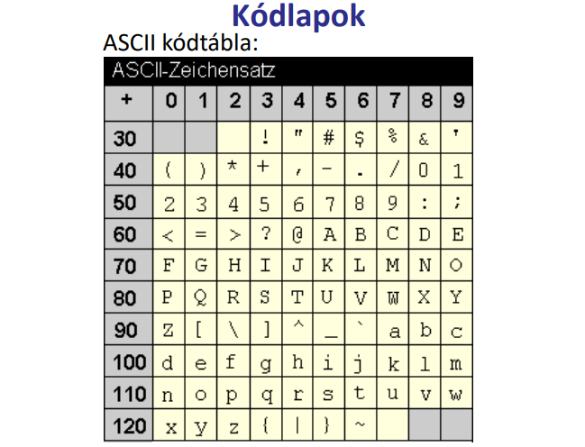
Kódlapok és szabványok
▶ Előadás ezen a részen
- Az ISO 8859-2 (Latin-2) kódtábla a következő nyelveket fedi le: Keleteurópai nyelvek, mint pl magyar.
Diakritikumok multigráfos kódolásai
▶ Előadás ezen a részen
Az ékezetes karakterek kódolásának számos hagyományos alternatívája létezett (különböző kontextusokban máig használt):
(ezek az átviteli kényszerek szülte megoldások; a Unicode előtti korszak jellemzői)
- e-mail / fokabel:
arvizturo tukorfurogep
- távirati:
aarviiztuuerooe tuekoerfuuroogeep
- repülő ékezetes:
a'rvi'ztu"ro" tu:ko:rfu'ro'ge'p
- számkódos:
a1rvi1ztu3ro3 tu2ko2rfu1ro1ge1p
- TeX:
\' arv\' izt\Hur\Ho t\"uk\"orf\'ur\'og\'ep
- HTML:
árvíztűrő
A Unicode és az UCS
▶ Előadás ezen a részen
UCS (Universal Character Set): az ISO 10646 szabvány által definiált univerzális karakterkészlet.
Unicode szabvány: 16 biten tárolt síkokra osztja a szabvány legutóbbi változatában rögzített kb. 100 ezer karaktert. Minden beszélt, holt és egyéb nyelv (pl. Braille) karaktereit (betűk, számok, írásjelek stb.) tartalmazza. Minden egyes karakternek egyedi száma és neve van:
U+0041 Latin capital letter A
U+0151 Latin small letter o with double acute
Eredetileg 2 bájton (16 biten) tárolta az adatokat (Basic Multilingual Plane), de ez nem volt elég, ezért 4 bájtos (32 bites) formátumra bővítették.
- UTF-8: változó hosszúságú kódolással (1–6 bájt) képezi le a Unicode karaktertáblát. Pl. 1 bájton tárolt kódjai az ASCII-nak felelnek meg, így a latin betűs UTF-8 kódolású szövegek a régi ASCII környezetben is olvashatók maradnak.
- UTF-16: 1 112 064 karaktert kódol.
- UCS-2 (elavult), 2 bájton — az UTF-16 részhalmaza.
- UCS-4 = UTF-32 = ISO 10646: 4 bájton (31 biten).
1980-as évek: igény egy egységes, minden karaktert leíró kódtáblára → ISO 10646 (ISO szabvány) és Unicode (amerikai cégek konzorciuma). 1991: egyesítik a két projekt eredményeit; az ISO 10646 csak karakterkészlet, a Unicode-ban viszont léteznek további kiegészítések, pl. egyeztetési szabályok. Unicode 16.0 (2024): összesen 154 998 karakter, 159-féle írás. (az „Old Hungarian" = székelyírás is benne van: U+10C80–U+10CFF)
A pontos gépi rendezés lehetőségei
• ABC sorrend nyelvekben
• Különböző nyelvek ABC-je esetén egyes karaktereket sem tudunk egyértelműen kezelni → transzliterálási probléma
• Szövegfájlban néha csak az első betű alapján történik a rendezés
• Magyar ábécé szerinti rendezés:
– abc-beli sorrend
– d < dz < dzs (multigráfok)
– cs, dz, dzs külön egységként kezelve
– ékezetes és ékezet nélküli betűk: i = í, e = é, a = á, stb.
– kis- és nagybetűk kezelése: azonosként értelmezhető (pl. Eger, egér)
– többszavas kifejezéseknél a szóközök figyelmen kívül hagyása
Részletek :
▶ Előadás ezen a részen
- A kiejtés szerinti írás problémái; az ábécébe rendezés elvei.
- Átjárás ábécék között: transzliterálási problémák.
- A magyar akadémiai rendezés főbb szabályai:
- A különböző betűvel kezdődő szavakat az első betűk ábécébeli helye szerint állítjuk rendbe, illetőleg keressük meg. (Pl.: acél, cukor, csók...)
(Az első eltérő betű ábécébeli sorrendje dönti el a szavak sorrendjét.)
- Az egyjegyű betűt teljesen elkülönítjük az azonos írásjelggyel kezdődő, de külön mássalhangzót jelölő kétjegyű (ill. háromjegyű) betűtől: az egyjegyű betű van előbb (pl.: cudar, cukor, cuppant, csalit, csata).
(Az egyjegyű betű (pl. c) mindig megelőzi az ugyanolyan jellel kezdődő kétjegyű betűt (pl. cs).)
- A többjegyű betűk kettőzött változatait sohasem az egyszerűsített alakok szerint soroljuk be a betűrendbe, hanem a megkettőzött betűt mindig két külön betűre bontjuk (ccs = cs + cs; ggy = gy + gy).
(A kettőzött többjegyű betűt (pl. ccs) két külön egységre bontva kezeljük a rendezésnél.)
- A magánhangzók rövid és hosszú változatát jelölő betűk (a – á, e – é, i – í, o – ó, ö – ő, u – ú, ü – ű) a kialakult szokás szerint mind a szavak elején, mind pedig a szavak belsejében azonos értékűnek számítanak a betűrendbe sorolás szempontjából. A magánhangzó hosszú változatát tartalmazó szó tehát meg is előzheti a rövid változatút.
(A rövid és hosszú magánhangzók (pl. a–á) általában egyenértékűek a betűrendbe soroláskor.)
- A rövid magánhangzós szó kerül viszont előbbre olyankor, ha két szó betűsora csak az azonos magánhangzók hosszúsága tekintetében különbözik.
(Ha két szó csak a magánhangzó hosszúságában tér el, a rövid magánhangzós szó kerül előre.)
- A különírt elemekből álló szókapcsolatokat és az egybeírt vagy kötőjellel kapcsolt összetételeket minden tekintetben olyan szabályok szerint soroljuk betűrendbe, mint az egyszerű szavakat — a szóhatárokat tehát nem vesszük figyelembe. Ugyanez a szabály érvényes a közszavak közé besorolt tulajdonnevekre is. (Pl.: Kis részben, kissé, Kiss Ernő, kis sorozat, kissorozat-gyártás, kis számban, kistányér, kis virág — tiszafa, Tiszahát, Tisza Kálmán, Tisza menti, Tiszántúl, Tiszapart, tiszavirág, tiszt)
(A szóhatárokat, kötőjeleket és szóközöket figyelmen kívül hagyjuk; a szavakat egybefolyó betűsorként rendezzük.)
- A betűrendbe soroláskor a szokásostól némiképp eltérően kezeljük a régies írású magyar családnevekben, valamint az idegen szavakban és tulajdonnevekben előforduló régi magyar, illetőleg idegen betűket. (Pl.: Czibere, Czuczor, Cházár, Császár, Cselényi)
(A régies magyar és idegen betűket speciális, eltérő szabályok szerint soroljuk be a betűrendbe.)
- A számokat tartalmazó tételeket úgy rendezzük betűrendbe, mintha a szám ki volna írva szóval (pl.: 2. fejezet → „második fejezet"). Ha az egész tétel számmal kezdődik, azt a betűrendben a megfelelő betűs szó helyére soroljuk. Azonos számok esetén a nagyobb szám kerül hátrább (pl.: 1., 2., 10., 100.).
(A számokat kiírt szóalakjuk szerint rendezzük betűrendbe; pusztán számos tételek esetén növekvő számsorrend érvényes.)
Betűstatisztikák és információelmélet
▶ Előadás ezen a részen
- Hangstatisztikák, betűstatisztikák: a legkorábbi számítógépes (vagy akár kézi) feldolgozás — pl. Petőfi összes versének fonémastatisztikája kézzel készült. A cél: meghatározni, melyik hangból/betűből mennyi fordul elő.
- Titkosírás-megfejtés: a betűgyakoriság alapján fejthető meg a rejtjelezés. Champollion a hieroglifákat, Gárdonyi titkos írását, az Enigma-kódot is gyakorisági elemzéssel törték fel (Kódjátszma).
- Morse-ábécé: a gyakori betűkhöz (elsősorban az angol gyakoriság alapján) rövidebb jelsorozatot rendeltek, a ritkábbakhoz hosszabbat — tehát gyakorisági alapon épül fel.
- Írógép-billentyűzet (QWERTY): az elrendezést úgy alakították ki, hogy a legtipikusabb betűsorozatokat két kézzel, különböző ujjakkal lehessen gyorsan leütni, és az írógépkarok ne akadjanak össze. Gyakorisági szempontokon alapul; a QWERTZ csak a Z–Y cserében tér el, mert a magyarban a Z gyakoribb.
- N-gráfok és nyelvtipizálás: a nyelvek jellemezhetők aszerint, hogy mely betűcsoportok (n-gramok) fordulnak elő gyakran. A magyarban eredetileg nem volt mássalhangzó-torlódás szó elején (sp-, str-, sk-); a latin jövevényszavakat ezért magánhangzóval oldottuk fel: skóla → iskola, strázsa → istráng, Stefán → István. Ma már (pl. strukturalizmus) elfogadjuk ezeket.
- Információ (Shannon): kisebb valószínűségű üzenetnek az információtartalma nagyobb, és független események együttes információtartalma az események információtartalmának összege.
n-gramok
▶ Előadás ezen a részen
- Definíció: n egymás után következő karakter (vagy szó) sorozata egy szövegben. (1-gram = betű/karakter vagy kínaiban szó (mivel az nem fonémát jelöl, hanem szavakat))
- Nyelvfüggetlenség: minden nyelv szövegéből megszámolhatók, beleértve az ideografikus írású kínai és japán nyelveket is (ahol egy karakter egy szót jelöl — a szöveg ugyanúgy darabolható n-grammokra).
- Hibatűrés: nagy szövegkorpuszon a karaktersorozatok gyakorisági eloszlása stabil; egy-egy elütés nem befolyásolja jelentősen az összképet.
- Alkalmazás: 3-gram, 4-gramokat használ a nyelvészet, mert ezek elég gyakoriak és már elég informatívak, ugyanakkor még elegendő mennyiségű adat áll rendelkezésre a megbízható statisztikai elemzésükhöz.
Karakter- és n-gram-alapú statisztikai megfigyelések
Zipf-törvény: egy szövegben néhány szó ( vagy n-gram ) nagyon gyakran fordul elő, míg a szavak többsége csak ritkán jelenik meg. Így csak a gyakoriakat megtartva a szöveg információtartalmának nagy része megőrizhető.
Heaps-törvény: a korpusz méretének növekedésével a szókincs mérete szublineárisan nő, vagyis egyre lassabban jelennek meg új szavak, de a szókészlet bővülése soha nem áll meg teljesen. (Magyarnál a ragozás miatt kicsit vadabb a helyzet.)
Mandelbrot-féle nyelvi törvényszerűségek: a gyakran használt szavak általában rövidebbek, és a nyelvtörténeti fejlődés során a nagy gyakoriságú szavak hajlamosak lerövidülni.
Betűsorrend és olvashatóság: az emberek a szavakat gyakran egész mintázatként ismerik fel, ezért a belső betűk felcserélése mellett is meglepően jól olvasható maradhat egy szöveg.
Zipf-törvény
▶ Előadás ezen a részen
Ha egy szövegben összeszámoljuk az egyes szavak előfordulási gyakoriságát, majd sorba rendezzük őket gyakoriságuk alapján, és ábrázoljuk a gyakoriságot rang szerint (azaz annak a függvényében, hogy az illető szó hányadik a sorban), akkor (közelítéssel) egy hatványfüggvény szerint lecsengő görbét kapunk −1-hez közeli kitevővel.
Tehát a gyakori szavak nagyon gyakran fordulnak elő, még a kevésbé előforduló szavakból rengeteg van, de alig pár előfordulással.
Következmény: ha a leggyakoribb szavakat tartjuk csak meg, a korpusz nagy része megmarad. A jelenség az emberi nyelvek univerzális tulajdonságának bizonyult.
⚠ Fontos: a Zipf-törvény nem csak szavakra érvényes — ha nem nyelvi egységeket, hanem a szövegben szereplő tetszőleges stringeket (n-gramokat) vizsgálunk, ugyanezt a hatványfüggvény szerinti eloszlást kapjuk.
Heaps-törvény
▶ Előadás ezen a részen
Heaps (1978): egy N szóból álló korpusz esetén a különböző szavak (szókészlet) mérete:
V ≈ K · Nβ
ahol K és β szövegtől, ill. nyelvtől függő konstansok (angoknál: β ≈ 0,4–0,6; magyarnál: β ≈ 0,6–0,7).
Mit jelent ez? A korpusz elején sok új szó jelenik meg, de ahogy növeljük a szövegtestet, egyre kisebb arányban bukkan fel valóban új szó — a növekedés szublineáris. Az új szavak (elírások, tulajdonnevek, ritkán előforduló alakok) nem lesznek gyakoriak.
Magyar sajátosság: a magyar agglutináló (toldalékoló) jellege miatt a β értéke magasabb, mint az angolban. Az asztal szóból az asztalra, asztalaitokéinak, asztalomnak stb. mind külön „szóként" jelenik meg a statisztikában — rengeteg új alak keletkezhet. Angolban a from, the, table külön tárolódnak és minden előfordulásuk a saját számlálójukat növeli; nincs ilyen robbanásszerű alakkészlet-bővülés.
Következmény: a nagyon gyakori szavak már egy viszonylag kis korpuszban megjelennek és stabilizálódnak; az újonnan felbukkanó szavak egyre ritkábbak lesznek, de teljesen soha nem állnak meg.
Mandelbrot
▶ Előadás ezen a részen
- Összefüggés van a szavak hosszúsága és rangja között is: a rövidebb szavak minden nyelvben sokkal nagyobb gyakorisággal fordulnak elő, mint a hosszabbak, mégpedig a rangjuk a hosszal fordítottan arányos.
- Észrevétel: ha a történelmi fejlődés során egy szó gyakorisága megnő, mivel ezezk rendszerint meg rövidülnek.
- Következmény: nyelveink legősibb rétegét (pl.: szem, orr, fül, száj, nyak, mell, kar) szinte kivétel nélkül egytag, két-három fonémából álló szavak alkotják.
betűsorrend és olvashatóság
▶ Előadás ezen a részen
Nem számít, milyen sorrendben vannak a betűk egy szóban — az egyetlen fontos dolog, hogy az első és az utolsó betű a helyén legyen. A többi betű lehet teljes összevissza-sorrendben, mégis probléma nélkül olvasható a szöveg. Ennek oka, hogy nem olvassuk el minden betűt egyenként, hanem a szót olvassuk a maga egészében.
Pldéul: „Egy anlgaii etegyem ktuasátai szenirt nem szímát, melyin serenrodbn vnanak a bteűk egy szbóan…"
- Kapcsolat az n-gramokkal: az n-gramok lényege, hogy a karakterek egymás utáni rákövetkezése jellemzi a szöveget. Ez a jelenség pontosan ezt a rákövetkezési sorrendet rúgja fel — a szó belsejének n-gramjait felforgatjuk, mégis olvasható marad a szöveg.
- Szabály: a szóhatároknál (space előtti és utáni) az első és az utolsó betű marad a helyén; a közbülső betűk tetszőleges sorrendbe keveredhetnek.
- Eredmény: az olvasók nagy százaléka gond nélkül dekódolja a szöveget — az agyunk a szót mint egészet ismeri fel, nem karakterenként olvassa.
Reguláris kifejezések a gépi nyelvészetben
▶ Előadás ezen a részen (Chomsky-hierarchia)
- 0-típusú nyelvtan (α → β): rekurzív megszámlálható nyelvek — felismerő: Turing-gép
- 1-típusú nyelvtan (αAβ → αγβ): környezetfüggő nyelvek — felismerő: lineárisan korlátozott automata
- 2-típusú nyelvtan (A → γ): környezetfüggetlen nyelvek — felismerő: veremautomata — O(n³)
- 3-típusú nyelvtan (A → a és A → aB): reguláris nyelvek — felismerő: véges állapotú automata — O(n)
Reguláris kifejezések a gépi nyelvészetben
A Chomsky-hierarchiában a 3-típusú (reguláris) nyelveket ragadjuk meg: ezeket véges állapotú automatával (FSA) ismerhetjük fel, O(n) időben — szemben a veremautomatával (O(n³)) vagy a Turing-géppel.
Véges állapotú automata (FSA)
▶ Előadás ezen a részen
A legegyszerűbb nyelveknek a regulárisoknak a kezelésére a véges állapotú automatát definiálta.
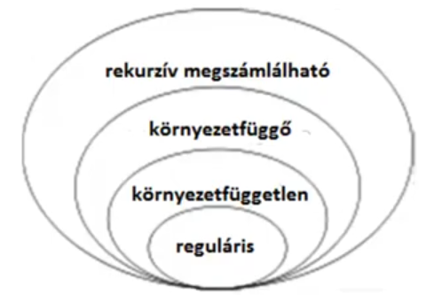
Véges állapotú automata: A = (S, Σ, s, F, T) ötös, ahol:
— S → állapotok véges halmaza
— Σ → egy ábécének nevezett véges halmaz (nem puszta karakterek, hanem a nyelv szimbólumai)
— s ∈ S → kiinduló állapot
— F ⊆ S → a végállapotok halmaza (végállapot bárhol lehet)
— T : S × (Σ ∪ {ε}) → S → átmenet függvény
Az X = x0x1…xn Σ ábécéből alkotott füzért A elfogadja, ha létezik S-ben az átmenetek r0, r1, …rn sorrendje a következő feltételekkel:
1. r0 = s ( a kiinduló állapot)
2. ri+1 = T(ri, xi) ( átmegyek az állapotok között x hatására )
3. rn ∈ F
Reguláris nyelv: a véges állapotú automata által elfogadott füzérek halmaza
Reguláris kifejezés: olyan formula, mely konkatenáció, unió és iteráció használatával meghatároz egy reguláris nyelvet
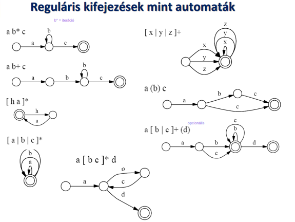
Véges átalakítók (FST)
▶ Előadás ezen a részen
Az FSA outputja bináris: a bemenő karaktersort beolvassa, és a végén annyit mond — elfogadtam vagy nem fogadtam el (igen/nem, true/false). A feldolgozás lépéseiről semmilyen információt nem ad. A nyelvészetben viszont nem csak az érdekel minket, hogy egy szóalak helyes-e, hanem az is, hogy mit jelent — mi a töve, mi a toldalék, milyen nyelvtani információt hordoz. Ehhez a bináris kimenet kevés. Éppen emiatt jött létre a véges átalakító (FST).
Véges átalakító: T(S, Σ, Γ, s, F, δ) hatos, ahol:
— S → az állapotok véges halmaza
— Σ → a bemenő ábécének nevezett véges halmaza (IN)
— Γ → a kimenő ábécének nevezett véges halmaz (OUTPUT, ami egy string lesz és nem bool)
— s ∈ S → a kezdő állapot
— F ⊆ S → az elfogadó állapotok véges halmaza
— T : S × (Σ ∪ {ε}) × (Γ ∪ {ε}) → S → átmenetfüggvény
A T átalakítja az α ∈ Σ* füzért β ∈ Γ* füzérbe (röviden: α[T]β) ha létezik út a kezdőállapotból egy végállapotba α bemenősorozat és β kimenő sorozat mellett.
Az automatákkal elvégezhető és értelmezhető műveletek: konkatenáció, unió, iteráció, metszet, kompozíció.
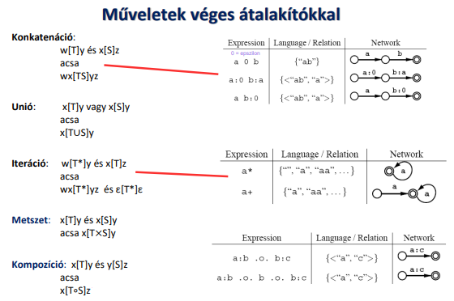
A nyelvtechnológiai felhasználás lényege, hogy megpróbáljuk a nyelvet kétszintes leírással megismerni; ezt automatákon keresztül tehetjük meg. A két szint: a lexikális szint (a szótári/belső alak, pl. ház+ak) és a felszíni szint (a ténylegesen kiejtett/leírt alak, pl. házak). Az FST pontosan ezt a leképezést végzi el a két szint között.
Johnson felismerése (1972)
Johnson észrevette, hogy a fonológiai leírások sosem alkalmazzák az újraíró szabályt saját kimenetére — mindig csak a környezetet írják át. Emiatt a bemenet-kimenet párok leírhatók reguláris relációval, ami ekvivalens egy véges állapotú átalakítóval. Következmény: a generatív fonológia szabályai bár környezetfüggő formalizmusban vannak leírva, valójában csak reguláris nyelveket generálnak — a 3-as Chomsky-osztályba tartoznak, nem az 1-esbe.
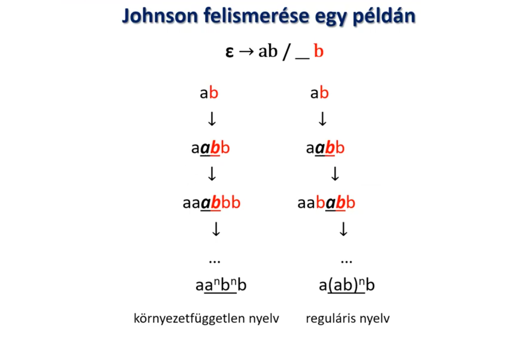
Ezen a képen az látszik, hogy gyakorlatilag egy egyszerű reguláris kifejezéssel is meglehet számolni, hogy azonos számú AB-t fűzünk egymás után, mint amennyi B van a végén. Ez a szabály nem generál környezetfüggetlen nyelvet, hanem regulárist.
Véges állapotú automaták kiterjesztései (RTN, ATN)
▶ Előadás ezen a részen
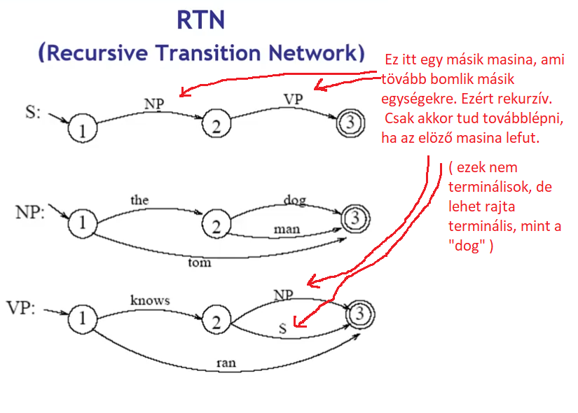
Kiindulás: a véges állapotú automaták hatékonyak és gyorsak, de a természetes nyelvek számos jelenségét nem tudják kezelni, mert nem képesek összetett szerkezetek és távoli függőségek nyilvántartására. Így a Reguláris nyelv helyett környezetfüggetlen nyelvek elemzésére alkalmas RTN és ATN kiterjesztések jöttek létre. (futás idő köbösre nő)
RTN (Recursive Transition Network – Rekurzív átmenetháló): a véges állapotú automata olyan kiterjesztése, amelyben az éleken nemcsak terminális szimbólumok (szavak), hanem más automaták nevei (nemterminálisok) is szerepelhetnek. Egy automata így meghívhat egy másikat, amelynek lefutása után folytatódik a feldolgozás.
Rekurzió: az automaták egymást akár önmagukon keresztül is meghívhatják, ezért az RTN képes beágyazott mondatszerkezetek kezelésére. A rekurzió miatt a rendszer működéséhez verem szükséges, ezért az RTN lényegében egy veremautomatának felel meg, és környezetfüggetlen nyelvek elemzésére alkalmas.
RTN baja: hogy a 2-vel ezelőtti állapotot nem tudja megjegyezni. ( pl.: leg + jo + bb ) .
ATN (Augmented Transition Network – Bővített átmenetháló): az RTN továbbfejlesztése, amely memóriát és különféle műveleteket is tartalmaz. Az átmenetekhez feltételek, tesztek és műveletek kapcsolhatók, például regiszterek tartalmának lekérdezése vagy módosítása. (Ez lényegében egy TG)
Kiegészítések: az ATN képes információkat eltárolni, visszakeresni, logikai feltételeket ellenőrizni és ezek alapján dönteni az állapotváltásokról. Így olyan nyelvi jelenségek is kezelhetők, amelyekhez a korábbi állapotokra vagy a mondat más részeire való emlékezés szükséges.
Jelentőség: az ATN-ek a 60–70-es években a természetes nyelv feldolgozásának fontos eszközei voltak. Segítségükkel nagy méretű nyelvtanokat lehetett leírni, és közelebb kerültek a valódi nyelvi szerkezetek kezeléséhez, mint a hagyományos véges állapotú automaták.
Kétszintes morfológia
Kimmo Koskenniemi által kifejlesztett modell, amely két reprezentációs szintet különböztet meg:
- Lexikális szint: Az alaki változást nem tartalmazó, absztrakt reprezentáció.
- Felszíni szint: A tényleges, megfigyelhető szóalak.
A két szint közötti megfeleltetést véges állapotú fordítókkal (FST) írja le. A módszer előnye, hogy ugyanazok a szabályok használhatók elemzésre és generálásra is.
Példa (magyar):
Lexikális: h á z + b a n
Felszíni: h á z b a n
(A '+' morfémathatár jelölése a lexikális szinten)
A számítógépes morfológia célja
A számítógépes morfológia olyan számítógépes technológiák és algoritmusok kialakításával foglalkozik, melyek segítségével különféle nyelvű toldalékolt szóalakok elemzése és generálása megoldható. A számítógépes morfológia az írott alakokkal foglalkozik.
Példa (magyar):
- Elemzés:
házakban → ház + ak (többes szám) + ban (inessivus/helyhatározó rag)
- Generálás:
ház + PL + INE → házakban
Az ilyen leképezéseket általában véges állapotú transzducer (FST) valósítja meg, amely minden toldalékolt alakot visszavezet az alapalakra és a morfológiai jegyekre (és fordítva).
- Szóalak-felismerés: a program visszaadja a toldalékolt szóalakból a szótári tövet (lemmatizálás), annak szófaját és a megjelenített nyelvtani információt.
- Szóalak-generálás: a helyes szóalak előállítása a szótő és a morfológiailag releváns nyelvtani információ segítségével.
Véges átalakítók párhuzamos kapcsolása
▶ Előadás ezen a részen
Tudva, hogy a lexikális és a felszíni alakok közötti megfeleltetés leírható reguláris relációval, Koskenniemi egy lényegi változtatást, a szabályhalmazból származó átalakítók párhuzamos kapcsolását javasolta.
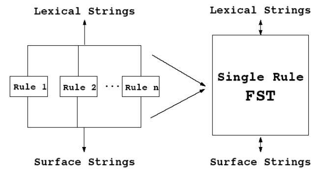
A kétszintes szabályok alakja
▶ Előadás ezen a részen
Egy kétszintes szabály az alábbi három részből áll:
—
megfeleltetett párok: amiről valójában a szabály „szól" — egy lexikális és egy felszíni karakterből álló pár (pl. t:c ahol a lexikális t megfelel a felszíni c-nek)
—
környezet (bal környezet (lc) és/vagy jobb környezet (rc)): az adott jelenséget körülvevő fonológiai helyzetet specifikálja (az aláhúzás jelenti a megfeleltetett pár helyzetét az adott környezetben)
—
szabályoperátor: a megfeleltetett pár és a környezete között fennálló reláció; nagyjából a formális logika feltételeket és következményeket leíró operátorainak felelnek meg:
- ⇒ a megfeleltetés csak akkor áll fenn, ha ez a környezet
- ⇐ ha ez a környezet, akkor a megfeleltetés fennáll
- ⇔ a megfeleltetés akkor és csak akkor áll fenn, ha ez a környezet
- ⇍ a megfeleltetés soha nem fordul elő ebben a környezetben
▶ Előadás ezen a részen
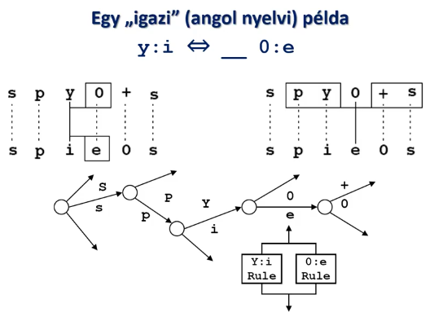
Konvenciók, speciális szimb megfeleltetés:
- Dzsókerszimbólum (általában: @, „kukac"): az adott ábécé tetszőleges karaktere helyett állhat; más formalizmokban más jellel is jelölhetik. Pl.
t:c ↔ ___ i:@ azt fejezi ki, hogy t lexikálisan c-nek felel meg, ha utána bármilyen felszíni szimbólum követi az i-t.
- Nullszimbólum (általában: 0 vagy ε): a két szalag csak egyenlő számú szimbólum esetén párosítható, ezért beszúrásnál és törlésnél az egyik szalagon üres (null) szimbólumnak kell állnia — pl. az y:i és 0:e párok egyidejű kezelésénél.
- Határszimbólum (általában: #): jelzi a szó elejét vagy végét (kizárólag egy másik határszimbólummal párban: #:#)
- Részhalmaz: egyszavas nevekkel jelzett karakterhalmazok, pl. C a mássalhangzók halmaza, V a magánhangzóké, T a felpattanó hangzóké, NAS a nazálisoké
Unifikáció és jegyszerkezetek
▶ Előadás ezen a részen (gráf fogalmak, DAG, jegyszerkezetek)
DAG (irányított körmentes gráf): Erre a legalkalmasabb használni az unifikációt.
Egy mondat alanyának lehetnek mindenféle tulajdonságai: lehet száma (egyes vagy többes) és személye (első, második, harmadik). Ezeket a tulajdonságokat jegyszerkezetekbe szervezzük — pl. [NUMBER SG], [PERSON 3]. Ezek a jegyszerkezetek DAG-okkal ábrázolhatók.
Jegyszerkezet: tulajdonságok (jegyek) és értékeik strukturált leírása. Csomópontok = változók, ösvények = jegynevek, ösvény végén atomi érték vagy alulspecifikált (üres) érték. Felírása jegy–érték mátrixként.
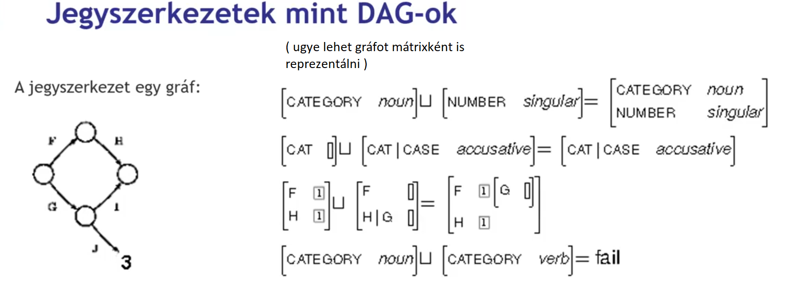
Az Jegyszerkezet-unifikáció művelete DAG-nál — az unifikáció egyedül akkor nem hajtható végre, ha ugyanazon az ösvényen egymásnak ellentmondó atomi értékek állnak:
( SG = Singular (egyes szám), PL = Plural (többes szám))
- [NUMBER SG] ∪ [NUMBER PL] = fail! (eltérő atomi értékek)
- [NUMBER SG] ∪ [NUMBER SG] = [NUMBER SG]
- [NUMBER SG] ∪ [NUMBER []] = [NUMBER SG] (alulspecifikált + konkrét = konkrét)
- [NUMBER SG] ∪ [PERSON 3] = [[NUMBER SG][PERSON 3]] (diszjunkt ösvények → mindkettő megmarad)
Destruktív unifikáció: az egyik kiinduló szerkezet helyén létrejön az eredmény; a másik megszűnik. Gyors, de a korábbi állapot elveszik.
Nem-destruktív unifikáció: valójában unifikálhatósági reláció ellenőrzése — a kiinduló szerkezetek megmaradnak, az eredmény egy harmadik, új szerkezet. Másolást igényel, de visszakövethetővé teszi a levezetést; implementációkban igen gyakori.
Szóalaktani alapséma
▶ Előadás ezen a részen
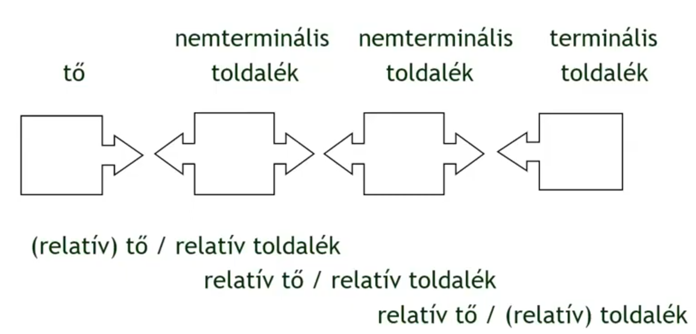
Unifikációs morfológia (HuMor = High-speed Unification Morphology)
A HuMor lényege, hogy minden nyelvi tulajdonság egy jegy. A morfológiai elemzés nem string-manipuláció (nem „lépj vissza két betűt, vágj egyet"), hanem: a szóalak tő- és toldalékrészeit felismerjük a szótár segítségével, és mindkettőhöz jegy–érték párokat rendelünk. Ezután megnézzük, hogy a tő és a toldalék jegyei unifikálhatók-e — ha igen, a szóalak grammatikus. A HuMor tehát nem más, mint unifikálhatósági relációk működtetése morfológiai jegyszerkezeteken.
Működési elv — példa: házban vs. *főnökban
- A szóalakot szegmentáljuk: megkeressük a lehetséges tő + toldalék(ok) felbontásait.
→ ház + -ban | főnök + -ban
- A tőhöz és minden toldalékhoz jegy–érték párok tartoznak a szótárból.
→ ház: [NÉVSZÓ +, MÉLYHANGRENDŰ +, …] | főnök: [NÉVSZÓ +, MÉLYHANGRENDŰ −, …]
→ -ban: elvárja [NÉVSZÓ +, MÉLYHANGRENDŰ +]
- A jobboldali elem (relatív toldalék) megmondja, milyen jegyeket vár el a baloldali elemtől (relatív tőtől).
→ -ban elvárja: MÉLYHANGRENDŰ +
- Az összeillesztést unifikálhatósági relációval ellenőrizzük: összeillik-e a tő és a toldalék?
→ ház [MÉLYHANGRENDŰ +] ∪ -ban [MÉLYHANGRENDŰ +] = ✓ → házban
→ főnök [MÉLYHANGRENDŰ −] ∪ -ban [MÉLYHANGRENDŰ +] = fail! → *főnökban helytelen, a helyes: főnökben
Így a literális alak (betűsorozat) elveszti jelentőségét — az számít, hogy a jegyszerkezetek összeillenek-e. A HuMor ma is számos helyesírási program morfológiai motorja.
Bináris jegyrendszer — a HuMor belső jegykészlete
▶ Előadás ezen a részen
A HuMor a hagyományos kategóriacímkék helyett hierarchikus, bináris (+/−) kérdések sorozatával osztályozza a szótöveket és toldalékokat. Néhány kulcskérdés magyar névszókra:
- 1. Névszó-e? (+ = névszó; − = ige)
- 2. Főnév-e? (csak ha névszó) + = főnév (pl. ház, kutya); − = melléknév/számnév (pl. nagy, három)
- 3. Szótári alapalak? (pl. kutya: +; bagj- (bagoj))
- 4. Hátulképzett (mélyhangrendű)? (ház, bot: +; kecske, főnök: −)
- 5. Ajakerekítéses? (csak ha elöl képzett) + = főnök (-höz, -öt); − = gyerek (-hez, -et)
- 6. Van-e többes száma? (pl. gázművek: − , mert ő maga a többesszám)
- 7. Kötőhang a többes számban? (autók: −; házak: +)
- 8. Van-e datívusza? (hó: +; hav- allomorf: −)
- ....
Bármennyi szabályt felvehetünk és ennek az n darab bináris jegy 2ⁿ kombinációt engedne meg, de a valódi nyelvi adatok messze nem töltik ki az összes lehetséges kombinációt. A „kivételek" mindössze ritka jegykonstellációjú szavak — a rendszer egységesen kezeli őket.
Példa :
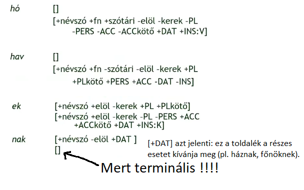
Guesser — a HuMor modulja ismeretlen szavak kezelésére
▶ Előadás ezen a részen
A morfológiai elemző csak a szótárában szereplő töveket ismeri fel. Ha egy tő nincs benne az adatbázisban (pl. új tulajdonneveket, neologizmusokat), a guesser (becslő modul) lép működésbe:
- Jobbról leválasztja az ismert toldalékokat, majd vizsgálja, hogy a maradék tőjelölt morfológiailag koherens-e.
- A toldalékosztályok korlátai alapján szűri a lehetetlen elemzéseket (pl. az igék zárt osztályt alkotnak: új igét csak igekötővel/képzővel lehet alkotni, önállóan nem jöhet létre).
- Többértelmű esetben (pl. kacsónak: datívusz vagy igei alak?) a korpuszgyakoriság segít: ha a feltételezett tőhöz sok toldalékolt alak található a szövegkorpuszban, az megerősíti az elemzést.
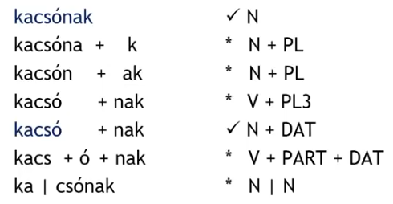
Egyetlen előfordulásból sokszor nem dönthető el az elemzés — elegendő kontextus és szövegkorpusz szükséges.
Alkalmazások
A morfológiai elemző (pl. HuMor) önmagában nem „végterméke" semminek — más rendszerek használják fel.
-
Helyesírás-ellenőrzés
▶ Előadás ezen a részen
- Spell checker (szószintű): megvizsgálja, hogy a szóalak létezik-e a morfológiai adatbázisban. Ha nem → hibásnak jelöli.
- Grammar checker (mondatszintű): szintaktikai/szemantikai összefüggéseket is vizsgál — lényegesen nehezebb feladat.
- Proofing tools csomag: helyesírás-ellenőrző + elválasztó + tezaurusz. A HuMor-alapú ellenőrző bekerült az Office-termékekbe is.
-
Tipikus hibák: karakterhibák/elütések, valódi helyesírási hibák, nyelvhelyességi hibák, tipográfiai hibák.
-
Javítható: betűhibák, egybeírások, kötőjelezés, szóismétlés |
Nem javítható: hibás különírások, közponozási hibák, szórendi hibák.
-
Automatikus szövegelválasztás
▶ Előadás ezen a részen
Alapszabályok + morfológiai felülbírálások (morfémhatárok > puszta betűszámlálás). Pl. asz–szony–nyal. (angolban alapból nem létezik egység)
-
Szinonimaszótárak és tezauruszok
▶ Előadás ezen a részen
A morfológiai elemző tőre vezeti vissza a szóalakot → a szinonima a megfelelő tőhöz kereshető.
Problémák: többértelműség kezelése, lexikai vs. szintaktikai szó különbsége.
- Intelligens keresés: a szótövek alapján működik, így minden ragozott alak megtalálható.
-
Példa: „ház" keresése megtalálja: házak, házban, házakat, stb.
-
Intelligens csere (lemmatizáció)
Szövegszerkesztőkben a morfológiai tudás segít az intelligens keresés-csere műveletekben,
megőrizve a ragozást.
Pontosság és fedés viszonya
▶ Előadás ezen a részen
A szövegszinkronizáció eredményét — mint minden nyelvtechnológiai feladatét — két egymásnak feszülő szempontból lehet mérni:
- Pontosság (precision): az összerendelt mondatpárok közül hány a valóban helyes megfeleltetés? — Amink van, az tényleg jó-e?
- Fedés (recall / teljesség): az összes lehetséges helyes párból hányat sikerült megtalálni? — Mindent megtaláltunk-e?
A kettő egymással ellentétes irányban mozog:
- Ha teljes szinkronizációra törekszünk (mindennek legyen párja) → magas fedés, de a rendszer néha téved, pontossága csökken. Erre a hosszalapú módszer tipikus példa.
- Ha részleges szinkronizációt csinálunk (csak a biztosan helyes párokat adjuk meg) → közel 100%-os pontosság, de a szöveg nagy része lefedetlen marad. Erre a horgonyalapú módszer tipikus példa: a horgonyok (URL, szám, tulajdonnév) szinte mindig pontosak, de egy hosszabb szövegben csak néhány ilyen akad.
Összefoglalva: a pontosság a részlegességgel, a fedés (teljesség) a relatív pontatlansággal jár együtt. A hibrid módszer pontosan ezt az ellentétet hidalja át: a horgonyok biztosítják a magas pontosságot, a hosszalapú komponens pedig kitölti a hézagokat, és biztosítja a teljes fedést.
Mondatreprezentációs megoldások a gépi nyelvészetben (függőségi és közvetlen összetevős szerkezet, X-vonás nyelvtanok).
A mondatszerkezet reprezentálása — faszerű gráfok
▶ Előadás ezen a részen
A mondatban az elemek közötti viszonyt leggyakrabban faszerkezettel ábrázoljuk. A fa egy irányított, körmentes gráf, amelyben minden csomópontnak pontosan egy szülője van; a csomópontok címkézettek, legfelül a gyökér, legalul a levelek.
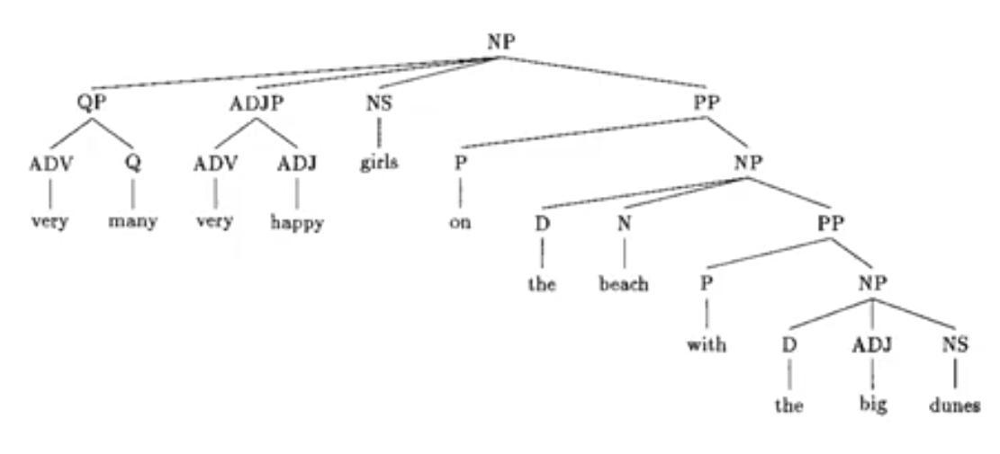
A fa egyszerre két információt kódol:
— dominancia (immediate dominance): ki kinek van alárendelve (hierarchia)
— előzés / sorrend (precedence): a testvércsomópontok lineáris elrendezése (pl. magyar névelő mindig megelőzi a főnevet, a tő megelőzi a toldalékot)
Ez a két tulajdonság független, ezért egyetlen fa egyszerre fejezi ki őket. Egy fa projektív, ha az élek nem keresztezik egymást — a környezetfüggetlen nyelvtanok zárójelezésével pontosan ez érhető el (egymásba ágyazott vagy diszjunkt szerkezetek).
Közvetlen összetevős szerkezet (Chomsky)
▶ Előadás ezen a részen
A Chomsky által bevezetett immediate constituency elv szerint a mondat (S) közvetlenül két összetevőre bomlik: egy főnévi (NP) és egy igei (VP) csoportra. Ezek testvércsomópontok: nem alá-fölé rendelten, hanem egymás mellett állnak, a hierarchia csak a beágyazódásból adódik. Példa: I know that Jane thinks that Bill likes beer — beágyazott mondatokkal építkező rekurzív szerkezet.
- Erőssége: a csoportoknak nevet ad (NP, VP, PP…), így a részfa egészére hivatkozhatunk.
- Gyengesége: a relációk jellege (alany, tárgy, határozó) nem jelenik meg explicit címkékkel — csak a fában elfoglalt helyzet hordozza.
- Az angolban a sorrend (SVO) erősen jellemző; a magyarban a szabad szórend miatt a funkcionális szerkezet (alany–állítmány–tárgy) sokkal hangsúlyosabb.
Miért problémás morfológiailag gazdag nyelveknél?
A morfológia a szavak belső szerkezetének tana: hogyan épülnek fel a szavak tövekből és toldalékokból. Pl. ház + ban = házban, olvas + t + am = olvastam.
A közvetlen összetevős elemzés feltételezi, hogy az összetartozó szavak egymás mellé kerülnek a fában (projektív, egybefüggő részfák). Magyarban azonban ugyanaz a grammatikai viszony szabad szórenddel is kifejezhető — a tárgyat az esetrag (-t) jelöli, nem a pozíció. Így pl. „A macska kergeti az egeret" és „Az egeret kergeti a macska" mondatokban az összetevőcsoportok szétesnek, vagy legalábbis más fát alkotnak, miközben a mondat jelentése azonos. A morfológia redundánssá teszi a pozíciót — az összetevős faszerkezet ezért sokkal kevesebb információt hordoz, mint analitikus (pl. angol) nyelvek esetén.
Függőségi (dependencia) szerkezet (Tesnière)
▶ Előadás ezen a részen
Az elemek nem ágaznak el új szülőcsomópontokba, hanem közvetlenül egymásra mutató, címkézett élekkel kapcsolódnak. A mondat központja az ige (a finitum); minden más bővítmény (alany, tárgy, határozó, kiegészítő) közvetlenül rajta vagy egymáson lóg.
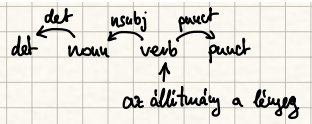
- Erőssége: a szintaktikai viszony neve közvetlenül az élen jelenik meg (subject, object, det, adjunct…).
- Gyengesége: nem nevez meg csoportokat — nem lehet közvetlenül hivatkozni arra, hogy „a kutya" mint egész egy NP.
X-vonás (X-bar) elmélet — a két szemlélet ötvözése
▶ Előadás ezen a részen
Az X-vonás nyelvtan ötvözi a közvetlen összetevős és a függőségi szemléletet. Az X bármely szófaji kategória helyettesítője (V, N, P, A…); a szerkezet vonásszámmal nő, ahogy a fej egyre több bővítményét veszi fel.
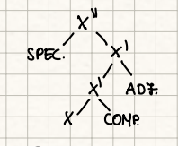
X = lexikonból előjövő, „üres" fej (még nincsenek bővítményei).
X′ (X-vonás) = a fej + kötelező complement (jobbra), pl. tárgy.
XP (X″, maximális projekció) = X′ + specifier (balra), pl. alany.
Adjunct (opcionális kiegészítő, pl. szabadhatározó) — nem emeli a vonásszámot, bárhol becsatlakozhat.
Példa: he studies computational linguistics at the university — studies (V) → studies computational linguistics (V′, mert a tárgyat kötelezően felveszi) → he studies … (VP / V″, a specifier alany megérkezik); az at the university PP adjunkt, nem változtat a vonásszámon.
Endocentrikus vs. egzocentrikus szerkezet: az X-vonás az endocentrikus szerkezeteknél működik (van egyértelmű fej, amely átviszi a kategóriát). A koordináció (pl. Jancsi és Juliska) egzocentrikus: nincs igazi fej — sem Jancsi, sem Juliska, sem a kötőszó nem hozza önmagában a főnéviséget.
Alapvető mondatelemzési módszerek (BU és TD-elemzők) és kombinációik.
▶ Előadás ezen a részen
A formális nyelvtan négyes (N, T, P, S): N = nem-terminálisok (szófaji és mondatrész-kategóriák), T = terminálisok (szótári elemek), P = újraíró szabályok (pl. S → NP VP), S = mondat-szimbólum.
A szavak mondatba szerveződésének szabályaihoz a környezetfüggetlen (CF) szint terjedt el: a reguláris túl gyenge (csak lineáris szabályok, nem tud beágyazást kezelni), a környezetfüggő meg túl drága (köbös komplexitás) — a CF a kettő között a legtöbb szintaktikai jelenséget jól leírja.
A szabályok alkalmazásának irányától függően:
- Felülről lefele (top-down): S-ből indulunk, a szabályokat balról jobbra alkalmazva levezetjük a bemenetet. A parser előre jósolja, milyen kategóriák jöhetnek, majd ellenőrzi a soron következő szavakat. Hátránya a vak próbálkozás, ha a nyelv nagyon szabad szórendű.
- Alulról felfele (bottom-up): a bemenet szavainak kategóriáiból építjük fel a fát, redukciókkal jutunk el S-ig. Ez biztosan csak valóban létező részfákat épít, de sok fölösleges részfa is létrejöhet, ha a nyelv rendetlen.
BU és TD kombinációi
A gyakorlatban a legjobb megoldás nem tisztán TD vagy BU, hanem valamilyen keverék. A chart parser és az Earley elsősorban azért működik jól, mert mindkét irány információját tárolja, és újrafelhasználja a már megvizsgált részeredményeket.
- Chart parser: a már bejárt részfákat egy táblázatban (chart) tárolja. Ha ugyanazt a részfát újra kellene vizsgálni, a parser egyszerűen újra felhasználja. Ez drasztikusan csökkenti az időkomplexitást ambiguitás és rekurzió esetén.
- Earley: három lépésből áll: előrejelzés (predict), skálázás (scan) és kiegészítés (complete). Így egyszerre képes kezelni top-down jóslatokat és bottom-up megtalált tokeneket.
- Left-corner: olyan hibrid, amely előre kiszámítja, mely szabályok kezdődhetnek egy adott szóval, és ezáltal korán szűri a nem releváns szabályokat.
Valószínűségi és kontextusfüggő kiterjesztések
A PCFG a szabályokhoz valószínűségeket rendel. Az elemző nem csak azt nézi, hogy a mondat levezethető-e, hanem hogy melyik levezetés a legvalószínűbb a korpusz alapján. Ez javítja a természetes nyelvű mondatok feldolgozását, ahol egyszerre több helyes elemzés is lehetséges.
Egyes modern algoritmusok a hagyományos BU / TD módszerekre épülnek, de statisztikai súlyokat és tanulókomponenseket is használnak. Például a redukciós parser elindítja a token feldolgozását, majd egy irányított veremmel kombinálja a top-down jóslatokat.
A morfológiailag gazdag nyelveknél (magyar) gyakori, hogy a fa levelei nem szavak, hanem morfémák, és a szintaxis „belenyúl" a szó belsejébe — pl. a szemben lakó szomszéd elemzéséhez a lak-ó melléknévi igenév összetétel megbontása szükséges.
Jegyszerkezetek, DAG, unifikáció, unifikálhatóság.
DAG és jegyszerkezet
▶ Előadás ezen a részen
A jegyszerkezetek általában attribútum-érték párokat tartalmaznak, amelyeket irányított ciklusmentes gráfként, azaz DAG-ként modellezhetünk. Minden csomópont egy fogalmi egységet vagy szintaktikai kategóriát jelöl, az élek pedig attribútumok, amelyek más csomópontokra mutatnak.
Példa: az NP csomópontnak lehet egy NUM attribútuma, amely a „többes” értékre mutat, és egy CASE attribútuma a „nominatív” értékre. A DAG előnye, hogy ugyanazt a jegyet több helyen is megoszthatjuk, és strukturált információt adhatunk át a feldolgozás során.
Unifikáció és unifikálhatóság
Az unifikáció olyan művelet, amely két jegyszerkezetet próbál összekapcsolni. Ha a két DAG nem tartalmaz ellentmondó attribútumérték-párt, akkor egyesíthetők; ezt nevezzük unifikálhatóságnak.
Ha egy jegy egyik ágán NUM = SG, a másikon pedig NUM = PL szerepel, akkor az unifikáció sikertelen, mert a két érték ellentmond. Ha viszont az egyik oldalon nincs érték, a másik oldalról örökölhető az attribútum, és az unifikáció sikeres.
- Példa: alany NP = [NUM: PL, PERS: 3] és állítmány V = [NUM: PL, PERS: 3] → unifikálva lehet, megerősítve az egyeztetést.
- Nem unifikálható: alany NP = [NUM: SG] és állítmány V = [NUM: PL] → ellentmondás, a részfa elvetve.
Az unifikálhatóság fontos a mondatelemzésben, mert a parser így szűri ki azt az elemzést, amelyik nem tartja be a nyelvben kötelező egyeztetési szabályokat.
Unifikáció a nyelvtechnológiában
Az unifikációt nem csak szintaktikai elemzésre használjuk, hanem morfológiában és lexikális feldolgozásban is. Például a morfológiai elemző egyesíti a szó tövét és a toldalék jegyeit, míg a szintaktikai elemző a mondatcsomópontok jegyeit egyezteti.
Az unifikációs feldolgozás lehet destruktív (a jegyek módosulnak és felülíródnak) vagy nem destruktív (a jegyeket új változatként hozzuk létre, az eredeti szerkezet megmarad). A magyar nyelvben különösen hasznos a nem destruktív unifikáció, mert a morfológiai és szintaktikai jegyek többféleképpen is értelmezhetők.
Példa – alany–állítmány egyeztetés: A „A fiúk futnak." mondatban:
fiúk → [NUM: PL, PERS: 3, CASE: NOM]futnak → [NUM: PL, PERS: 3]- Unifikáció: a két csomópont szám- és személyjegye egyezik → elemzés elfogadva ✓
- Ha „A fiú futnak." lenne:
[NUM: SG] ∪ [NUM: PL] = fail! → elemzés elutasítva ✗
- „A könyvet olvasnak." — az ige vonzatkerete NOM alanyt vár, de a témát ACC jelöli; a jegyek nem unifikálhatók.
Fontos különbségtétel: nem a jegynek van értéke, hanem az odavezető ösvénynek (útnak).
Nem azt mondjuk, hogy „az igének száma van", hanem hogy „a mondat állítmányát jelző ige száma azonos a mondat alanyát jelző főnév számával" — vagyis két DAG-ösvény végén lévő érték kell, hogy egyezzen. Ez az egyeztetés (agreement) DAG-gal való leírása: ha ezt az ösvény-azonosságot felírjuk, egyetlen szabállyal leírjuk az egyes és többes számú egyeztetést is — nem kell külön szabály minden kombinációra.
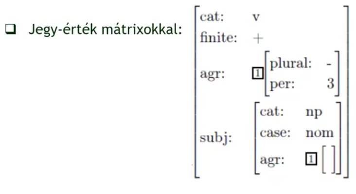
Fejjegyek vs. lábjegyek: a fejjegyek (head features) végigvonulnak az egész szerkezeten — pl. szám, személy, élő/élettelen. A lábjegyek (foot features) csak az aktuális művelethez kellenek, utána eldobhatók — pl. a magyar a/az névelő választása attól függ, hogy a következő szó magán- vagy mássalhangzóval kezdődik-e; ez az információ az NP-n belül kell, de feljebb már nem.
Jegyszerkezetek a mondatelemzésben
▶ Előadás ezen a részen
Az unifikáció és a jegyszerkezetek fogalmát a 3. tételben vezettük be (HuMor, DAG, destruktív/nem-destruktív unifikáció). Itt ugyanazt a mechanizmust szintaxis szintjén alkalmazzuk: nem tő+toldalék, hanem mondat csomópontjai között.
Az unifikáció és alkalmazásai a nyelvtechnológiában (morfológiában, szintaxisban).
A morfológiánál bevezetett jegy–érték párokon alapuló reprezentáció a mondatelemzésben is használható: a csomópontokhoz egyezési jegyeket (szám, személy, eset, határozottság) rendelünk, és az összekapcsolásnál unifikációval ellenőrizzük az összeillést (alany–állítmány egyeztetés, vonzatkeret kielégítése). Így a mondatelemzés ugyanazzal a műveletkészlettel végezhető, mint a morfológia.
Példa – alany–állítmány egyeztetés: A „A fiúk futnak." mondatban:
fiúk → [SZÁm: PL, SZEMÉLY: 3, KES: NOM]futnak → [SZÁm: PL, SZEMÉLY: 3]- Unifikáció: a két csomópont SZÁm és SZEMÉLY jegye egyezik → összekapcsolható ✓
- Ha „A fiú futnak." lenne:
[SZÁM: SG] ∪ [SZÁM: PL] = fail! (eltérő atomi értékek) → elemzés elutasítva ✗
- „A könyvet olvasnak." — vonzatkeret nem teljesíthető:
könyvet → [KES: ACC], de az ige alanyt vár [KES: NOM] pozícióban; nincs NOM esetű alany → unifikáció sikertelen, elemzés elutasítva ✗
„Elutasítva" azt jelenti: az elemző ezt a részfa-hipotézist elveti és nem folytatja. Ha minden lehetséges út meghiúsul, a mondat grammatikailag helytelennek minősül — a program nem ad vissza szerkezetet.
Fontos különbségtétel: nem a jegynek van értéke, hanem az odavezető ösvénynek (útnak).
Nem azt mondjuk, hogy „az igének száma van", hanem hogy „a mondat állítmányát jelző ige száma azonos a mondat alanyát jelző főnév számával" — vagyis két DAG-ösvény végén lévő érték kell, hogy egyezzen. Ez az egyeztetés (agreement) DAG-gal való leírása: ha ezt az ösvény-azonosságot felírjuk, egyetlen szabállyal leírjuk az egyes és többes számú egyeztetést is — nem kell külön szabály minden kombinációra.
Fejjegyek vs. lábjegyek: a fejjegyek (head features) végigvonulnak az egész szerkezeten — pl. szám, személy, élő/élettelen. A lábjegyek (foot features) csak az aktuális művelethez kellenek, utána eldobhatók — pl. a magyar a/az névelő választása attól függ, hogy a következő szó magán- vagy mássalhangzóval kezdődik-e; ez az információ az NP-n belül kell, de feljebb már nem.
A szintaktikai szerepek és a jelentés viszonya.
▶ Előadás ezen a részen
A jelentésábrázolás háromrétegű:
— a való világ dolgai (denotátumok),
— a modell, amellyel a világot közelítjük,
— az elmélet / formális leírás, amely a modellt formálisan jellemzi.
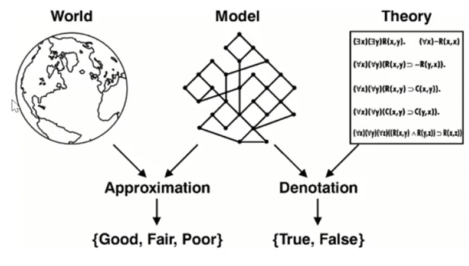
Sosem a világgal, mindig a modellünkkel dolgozunk. A számítógépes nyelvészet számára a nyelvi jelentés és az enciklopédikus világismeret összemosódik: pl. Péter megvette az Ember tragédiáját mondatban tudni kell, hogy nem a művet, hanem egy példányát vásárolta meg.
Esetek a mélyben és a felszínen.
▶ Előadás ezen a részen
A szintaktikai szerep (alany, tárgy, határozó) és a szemantikai / tematikus szerep (ágens, páciens, eszköz…) nem esik egybe. Ugyanaz a szemantikai szerep különböző szintaktikai pozícióban jelenhet meg — ezért van szükség a mélyesetek külön szintjére.
- Pistike betörte az ablakot a labdával — Pistike = alany + ágens, labda = eszközhatározó + instrument
- A labda betörte az ablakot — labda = alany, de szemantikailag továbbra is instrument, nem ágens (nincs szándéka)
A felszíni eset az, amely a mondat nyelvtanában morfológiailag megjelenik (alany, tárgy, részeshatározó, eszközhatározó stb.). A mélyeset (case role / thematic role) ezzel szemben szemantikai szerep, amely független a felszíni alaktól.
Fillmore mélyesetei (tematikus szerepek):
- Ágens — szándékos cselekvő (Péter olvas)
- Páciens / Theme — az érintett entitás (elolvassa a könyvet)
- Experiencer — élmény alanya (Jonesnak tetszik a film)
- Instrument — eszköz (villával eszik)
- Location, Source, Goal, Time — térbeli / időbeli szerepek
- Beneficiary — kedvezményezett
Ugyanaz a mélyeset különböző nyelvekben más felszíni alakban jelenhet meg (pl. az experiencer az angolban alany — Jones likes the film —, a magyarban és németben részeshatározó — Jonesnak tetszik / Jones gefällt). Ezért a fordításnál és az interlingua-alapú reprezentációknál a mélyesetekkel dolgozunk.
Jelentésegyértelműsítés.
▶ Előadás ezen a részen
Egy szóalakhoz több jelentés (sense) tartozhat (pl. angol spirit = lélek / szesz, bank = bank / partszakasz). A WSD feladata a kontextus alapján kiválasztani a helyes jelentést.
- Tudásalapú WSD: szótár, ontológia (pl. WordNet) alapján — Lesk-algoritmus: a környező szavak definícióinak átfedését nézi.
- Statisztikai / gépi tanulás alapú: annotált korpuszból tanulja meg a jelentésválasztást a kontextusból.
- Korpuszalapú: együtt-előfordulások (kollokációk) alapján.
- Mélytanuláson alapuló: kontextuális szóbeágyazások (pl. BERT) automatikusan kódolják a szó aktuális jelentését a mondatbeli környezet alapján — külön WSD-lépés nélkül is meg tudják különböztetni pl. a bank pénzintézet vs. partszakasz jelentését, mivel a szóvektor mondatonként változik.
A WSD a gépi fordítás, információkinyerés, kérdés-válasz rendszerek és kereső motorok kulcsfeladata.
Híres fogalmi hálók.
▶ Előadás ezen a részen
A WordNet a Princeton egyetemen George A. Miller vezetésével létrehozott lexikális adatbázis, amelyben a szavakat nem ábécé-rendben, hanem jelentés szerinti hálózatba szervezik. Alapegysége a synset (synonym set) — azonos jelentésű szavak halmaza, amely egy fogalmat reprezentál.
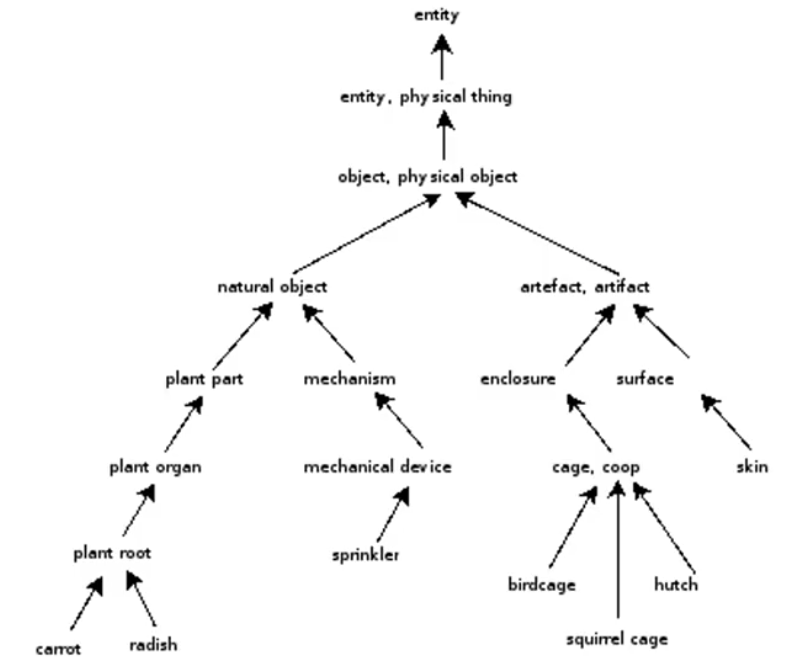
A synsetek között szemantikus relációk feszülnek — és a relációk típusa szófajonként eltér:
- Főneveknél: Hipernima ↔ Hiponima (állat → kutya → szuka), Holonima ↔ Meronima (épület ↔ ablak)
- Igéknél: Troponima — egy ige speciális megvalósítása (megy → őgyeleg, andalog, csoszog), Entailment — logikai következés (horkol → alszik)
- Melléknév/határozószónál: kevesebb él-típus, részben főnévi gyökre mutat vissza
- Antonima — ellentét (minden szófajnál)
Poliszémia: egy szó több synsetbe is tartozhat. Főneveknél viszonylag könnyű elkülöníteni (számítógépes egér ≠ cincogó egér). Igéknél sokkal nehezebb — pl. tart: „tartok valamit a kezemben" / „Nagyvárad felé tartok" / „tartok tőle" — ezek külön synset vagy ugyanaz? A WNet építőjének kell eldöntenie. A „bass" angol szónak pl. 8 különböző synsete van (basszus hang, basszus szólam, bőgő, sósvízi hal stb.).
A Princeton WNet módszertanát átvette az EuroWordNet — a nyelvek közötti kapcsolatot egy Inter-Lingual Index (ILI) biztosítja. Ehhez csatlakozik a Balkanet (balkáni nyelvek), és ezen keresztül a Magyar WordNet is (~42 000 fogalom; automatikusan létrehozva, kézzel validálva).
A WordNet széles körben használt a WSD-ben, információkeresésben és szemantikus következtetésben.
Az emberi felhasználásra készült szótárakban való keresés nyelvfüggő problémái.
▶ Előadás ezen a részen
A szótárak a lexikális egységeket felsorolják, de a nyelvek között nem egységesen kezelik a lexikont és a világismeretet. Magyarul a lexikon gyakran enciklopédiát jelent, míg a számítógépes nyelvészetben a szótár a szavak alapjelentéseit és szemantikus jegyeit tárolja. A magyar gazdag toldalékolása és produktív szóalkotása miatt a visszakeresés nem csak a szóalakokra épül — lemmatizálni kell a szótári alakot, és a produktív képzések sokszor nincsenek külön felsorolva.
- Morfológia: a szótári keresésnek kezelnie kell a toldalékos, ragozott és összetett szóalakokat; ha csak literális stringet keresünk, a magyarban rengeteg találatot elveszíthetünk.
- Allomorfia: ugyanaz a gyökér többféle formában jelenik meg (pl. fog, fogta, fogás), ezért a rendszernek vissza kell térnie a szótári alapformához.
- Szóösszetételek: a szótárak címszavai nem sorolnak fel minden összetételt; a keresőnek fel kell ismernie a belső határokat és a komponens szavakat.
- Lexikográfiai különbség: az emberi szótárak magyarázó jellegűek, míg a gépi szótáraknak strukturált, gépileg feldolgozható adatot kell adniuk.
- Szemantikus háló szükségessége: a WordNet és ontológiák kiegészítik a tiszta lexikális listákat a jelentés szerinti relációkkal, ami segíti a keresést és a jelentés-egyértelműsítést.
Ezért az emberi felhasználásra készített szótárakban való keresés nyelvfüggő problémái kulcsfontosságúak: a morfológia, az allomorfia és a szóösszetételek minden nyelvnél másként jelennek meg, ezért a magyar nyelv specifikus feldolgozó modulokat igényel.
Az „ablakos” kommunikáció nehézségei miatt kialakuló gyorsfordítók és tulajdonságaik.
▶ Előadás ezen a részen
A gyorsfordítók a felhasználó aktív munkafolyamatát nem megszakítva adnak azonnali segítséget: a szótár vagy jelentés nem külön ablakban nyílik meg, hanem a képernyőn megjelenő szöveg fölé vetített popupként jelenik meg.
- Popup / rávetítés: a rendszer az aktuális alkalmazás fölé vetít információt, így a felhasználónak nem kell váltania ablakok között.
- Kis beavatkozás: kevés billentyűkombináció vagy automatikus aktiválás (pl. kettő másodpercet áll a kurzor a szó felett) indítja el a keresést.
- Gyors visszajelzés: a felhasználó gyorsan látja a szótári vagy fordítási javaslatot, majd folytathatja a munkát anélkül, hogy a segédanyagra várna.
- Környezettudatosság: a rendszernek tudnia kell, hogy melyik ablakban van a szöveg, és ha más ablak kitakarja a részt, a felismerés pontossága csökken.
- Sürgősség a jelentéshez: ezek a rendszerek nem a tökéletes nyelvtani fordítást célozzák, hanem a gyors, érthető jelentéskiszolgálást.
A gyorsfordítók tulajdonságaiba ezért beletartozik a képernyőalapú szövegfelismerés, a lemmatizálás és a minimum-interakciós keresés, hogy a felhasználó percek alatt megtalálja a szükséges információt.
Fogalmi reprezentációk, forgatókönyvek.
A számítógépes szemantika nem csak szójelentésekkel dolgozik, hanem a fogalmak és események közötti kapcsolatokkal. A fogalmi háló olyan gráf, ahol a csomópontok fogalmakat vagy konceptuális egységeket jelentenek, az élek pedig a köztük lévő relációkat. A fogalmi függőség (conceptual dependency) olyan elmélet, amely a fogalmakat történetszervező struktúrákkal kapcsolja össze, hogy a számítógép a szavak mögötti „mi történt" jelentést is fel tudja építeni.
Ebből a nézőpontból a mondatok már nem egyszerűen egymás mellé helyezett szavak, hanem szereplőkkel, cselekvésekkel és fókuszpontokkal rendelkező forgatókönyvek. Ez segít kezelni a poliszémiát és a szerkezeti többértelműséget: a spirit lélek vagy alkohol értelmezése a környező fogalmi háló és a világismereti háttér alapján válik egyértelművé.
Ontológiák, WordNet.
▶ Előadás ezen a részen
Filozófiailag az ontológia a létezés tudománya. Ontológiák mindigis a világot szerette volna leírni, itt viszont a számítógépes nyelvészetben több ontológia is van (innen a többes szám furcsasága). Egy ontológia fogalmak és köztük lévő relációk formális leírása, amely világismereti és nyelvészeti tudást egyaránt rögzít.
Felső (upper) ontológia
▶ Előadás ezen a részen
A felső ontológia egy felülről lefelé épített hierarchia: a legtetején a legabsztraktabb kategóriák állnak (actuality, szerep, komponens, participant…), és addig megyünk le, amíg már a hétköznapi életben is használt fogalmak jelennek meg — pl. ágens, buszvezető, taxisofőr. Minden csomóponthoz tartozik egy szöveges definíció, tehát az ember megérti, mit jelent. A hierarchiában az öröklés működik: a buszvezető örökli, hogy ő egy driver → doer → agent → …
Ebből elég egyet csinálni — ezt a filozófusok, ontológusok kidolgozzák, és a saját tartományi (domain) ontológiánkat rákapcsoljuk (pl. orvosi, jogi, biológiai stb.), amely örökli a felső ontológia tulajdonságait. Példa: SUMO
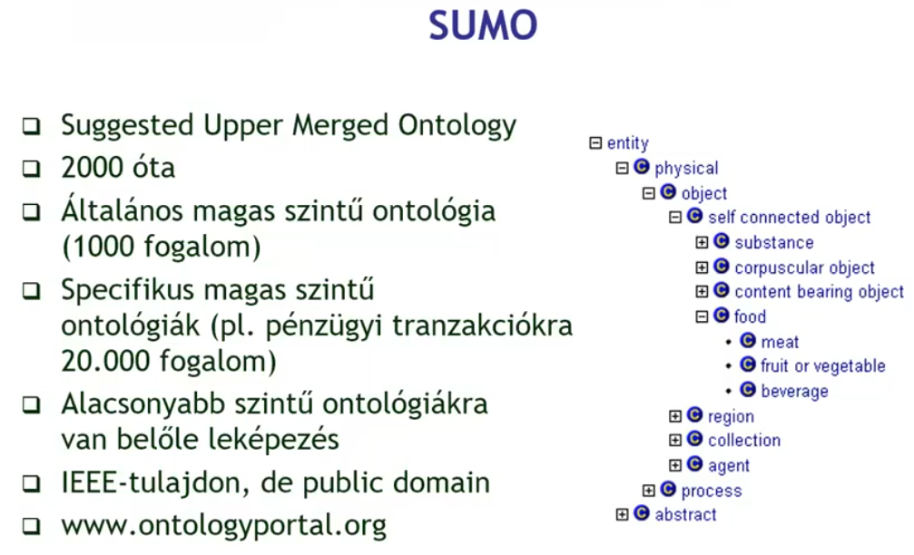
Korpuszok és korpusznyelvészet
▶ Előadás ezen a részen
A korpusz elektronikus, géppel kereshető, reprezentatív szöveggyűjtemény, amely egy nyelv vagy nyelvváltozat tanulmányozásához ad mintát. A reprezentativitás azt jelenti, hogy különböző műfajokat, regisztereket és időszakokat arányosan tartalmaz.
Korpusznyelvészet — két iránya
▶ Előadás ezen a részen
A korpusznyelvészetnek nincs egységes definíciója: a lényege, hogy valamilyen meghatározott szempontok szerint összeállított szövegegyüttesen végzünk vizsgálatot.
Két alapvető megközelítés különíthető el:
- Korpuszalapú (corpus-based): a kutató már rendelkezik valamilyen elméleti hipotézissel, és a korpuszból veszi hozzá az adatokat — megszámolja, majd megerősíti vagy cáfolja az elméletet.
- Korpuszvezérelt (corpus-driven): a kutató adatok nézegetése közben vesz észre egy mintát, amelyből aztán az ötlet vagy elmélet születik. Erre vonatkozik a serendipity principle — a véletlenszerű felfedezés elve: nem azt találjuk, amit kerestünk, hanem valami meglepőt.
A korpusz mérete: token és type
▶ Előadás ezen a részen
A korpusznyelvészeti módszerek (statisztika, gépi tanulás) csak kellő méret fölött működnek megbízhatóan — ahogy rúdugráshoz sem elég 1 méter magasság. De mekkora az elég? A méretet általában tokenekben adják meg (whitespace-szel elhatárolt egységek vagy pl: . / # / $ ...), mert a type-ok (különböző szóalakok) megszámlálása morfológiai elemzést igényelne.
- 1 A4-es oldal ≈ 250 szó
- Az első igazi korpusz, a Brown korpusz (1961): 1 millió szó
- Magyar Nemzeti Szövegtár: mára elérte az 1 milliárdot
Érdekesség: milliárdos korpuszban egy ezreléknyi hibaarány is egymilliós hibaszámot jelent — mégis elegendő minőségi adat marad pl. helyesírás-ellenőrző tanításához.
Korpuszannotáció (a szöveg strukturált nyelvi elemzési rétegekkel való gazdagítása)
▶ Előadás ezen a részen
A korpuszok egyszerű nyers szövegként is felhasználhatók, de értékük annotálással növelhető:
- Morfológiai elemzés: szófaj, tő, toldalék meghatározása minden szóalakra
- Szófaji egyértelműsítés (POS-tagging): többértelmű szóalakok feloldása kontextus alapján
- Névelem-felismerés (NER): tulajdonnevek, dátumok, webcímek egységként kezelve
- Szintaktikai elemzés: főnévi csoportok, mondatrészek, függőségi viszonyok jelölése
- Koreferencia-jelölés: ugyanarra az entitásra mutató előre- és visszautalások összekötése
- Dialógus-annotáció: szóátvétel, közbevágás jelölése (szociolingvisztikában fontos)
A nagy modern korpuszokat már nem lehet kézzel annotálni. Megoldás: bootstrap annotáció — a gép annotál, az ember javít egy kis részt, arra tanítunk újra, és így tovább. Saját magát felépítő folyamat.
Fontosabb korpuszok
▶ Előadás ezen a részen
- Brown korpusz (1961): az első igazi korpusz — 1 millió szó, lyukkártyán. POS-tagged (87 kategória, mnemonikus kódok: VB, VBD, VBZ…), máig standard referencia.
- Penn Treebank: ~3M szó (Wall Street Journal + Brown), szintaktikailag elemzett fastruktúrákkal — az első komolyabb treebanknak számít.
- Szeged korpusz: ~1,2M szó (irodalom, iskolai dolgozat, jogi szöveg, szoftverkézikönyv, újság — 6 × 200k), morfológiai és szintaktikai annotációval; POS-tagging pontossága 96,95%.
- Szószabja: a .hu domain leszedett szövege (~1,2 mrd tokenből 40%-ot kidobtak: nem magyar, ékezet nélküli, rossz minőségű). Maradt ~500M szó, 7,2M type. Elemzetlen, de hatalmas.
- Magyar Nemzeti Szövegtár (MNSZ): irodalom, fórumok, jogi anyagok + határon túli magyar szövegek. 187M → 500M → 1 mrd szó. Morfológiai annotációval, kereshető.
- Pázmány korpusz: ~1,2 mrd szó (1000× Szeged). Webes forrás, normált / komment / egyéb rétegekkel; morfológiai elemzés + főnévi csoport határok jelölve.
Párhuzamos korpuszok
▶ Előadás ezen a részen
Párhuzamos korpusz: két (vagy több) nyelvű egymásnak megfeleltetett szöveggyűjtemény. A megfeleltetés általában mondat-, ritkábban kifejezés- vagy szószintű.
a Rosetta-kő (i.e. 196) — egyiptomi hieroglifa, démotikus és ógörög változat egymás mellett. Champollion ennek alapján fejtette meg a hieroglifákat. A Biblia a legrégebbi, sok nyelven fennmaradt párhuzamos korpusz.
A párhuzamos korpuszok a gépi fordítás alapvető tanítóanyagai: az SMT és NMT rendszerek ezeken a mondatpárokon tanulják meg a forrás- és célnyelv közötti megfeleléseket.
Szövegszinkronizáció
▶ Előadás ezen a részen
Szövegszinkronizáció (alignment): párhuzamos szövegek egymásnak megfelelő szövegegységeinek összekapcsolása. Az alapkérdés: bekezdés-, mondat- vagy szószintű legyen-e a megfeleltetés?
A szinkronizáció szintjei
- Bekezdésszint: viszonylag megbízható — a fordítások általában nem változtatnak a bekezdéshatárokon.
- Mondatszint: kívánatos, de nehezebb — az arány nem mindig 1:1; lehetséges 1:2, 2:1, sőt 1:0 (kihagyott vagy betoldott mondat) is.
- Szószint: sok szónak nincs közvetlen fordítása, ezért ez a legproblematikusabb szint.
Mondatszegmentálás (sentence boundary detection)
▶ Előadás ezen a részen
Mondatszegmentálás: a folyamatos szöveg mondathatárokra bontása. Durva hüvelykujj-szabály: „nagy betűvel kezdődik és ponttal végződik" — de ez gyakran megbízhatatlan.
Mondatszegmentálás — problémás esetek
A pont önmagában nem elég megbízható mondatzáró jel. Problémás esetek:
- Rövidítések: U.S., Smith Corp. — a pont rövidítésjel, nem mondatvég.
- E-mail-cím, webcím: john@smith.com — belső pont nem mondathatár.
- Tizedes pont (angolban): 3.14
- Idézőjeles közbevetés: a macskakörömben lévő idézet átnyúlhat mondathatáron.
- Gondolatjel közt lévő betoldás: a gondolatjelek közt álló rész önmagában nem mondat, de kiszakítva annak látszik.
Megoldás: előfeldolgozás (rövidítéslista, regex-alapú tokenizálás), majd statisztikai/szabályalapú mondathatár-detektor.
Mondatszinkronizálás (sentence alignment)
▶ Előadás ezen a részen
A párhuzamos korpusz építéséhez először mondatra kell szegmentálni (nehéz: a pont nem mindig mondatvég — U.S., Smith Corp., URL-ek). Utána a mondatokat egymásnak meg kell feleltetni (1:1, 1:2, 2:1, 1:0 stb.).
-
Hosszalapú (length-based) — ▶
Gale–Church (1993): a fordítás hossza korrelál az eredeti hosszával. Dinamikus programozással globálisan optimális párba állítást keres — nem kapkod, hanem az egész szövegre nézve legjobb megoldást találja. Előny: nyelvfüggetlen, mindig ad eredményt (teljes szinkronizáció). Hátrány: eltévedhet 1:2, 2:1, 1:0 esetekben.
-
Szótáralapú (dictionary-based) — ▶
Kétnyelvű szótárból ismert szópárokat keres a mondatokban: ahol mindkét oldalon sok megfelelő szó szerepel, ott párosít. Előny: jó pontosságú részleges szinkronizáció. Hátrány: külső lexikai forrás kell, tulajdonneveket és ritka szavakat nem kezeli.
-
Horgony (anchor) alapú — ▶
Nyelvtől független, mindkét szövegben azonosan szereplő elemeket (e-mail-cím, URL, szám, tulajdonnév) rögzítési pontként használja. Lineáris regresszióval szűri a valódi horgonyokat. Előny: pontossága közel 100%. Hátrány: csak részleges szinkronizáció — kevés horgony van egy szövegben.
-
Hibrid módszer — ▶
Először horgonyalapú szinkronizációval kisebb szövegszakaszokat jelöl ki, majd ezeken belül hosszalapú módszert alkalmaz. Így a hosszalapú nem tud „eltévedni" a nagy szövegben, a horgonyok pedig nem kell hogy minden mondatot lefedjék.
Szóbeágyazás (word embedding)
▶ Előadás ezen a részen
A szóbeágyazás volt az első neurális hálóhoz közeli megoldás, amely a szavakat sokdimenziós vektortérbe konvertálja a szövegkörnyezetük alapján. A szó jelentése = a szövegkörnyezete: minden szó sokféle kontextusban fordul elő, és ezek a kontextusok együtt jellemzik, mit jelent az adott szó. Hasonló kontextusú szavak közel kerülnek egymáshoz a vektortérben — a gép maga tanulja meg az összefüggéseket pusztán szövegből, mi nem adjuk meg.
Különbség a manuális módszerektől (WordNet, ontológiák): ott mi definiáljuk a kategóriákat; a szóbeágyazásnál a gép maga tanulja meg az összefüggéseket pusztán nyers szövegből.
Szóbeágyazás (word embedding): szavak ábrázolása sűrű, valós értékű vektorként egy néhány száz dimenziós térben. A vektorok úgy tanulódnak, hogy hasonló kontextusban előforduló szavak közel kerüljenek egymáshoz a vektortérben. Klasszikus modellek: word2vec (CBOW, Skip-gram), GloVe, FastText; ma a kontextuális beágyazások (BERT) terjedtek el.
word2vec — tanítási stratégiák (Mikolov, 2013)
Egy sekély neurális hálóval a szavakat vektorokká alakítja: a szó körüli szövegablak (bal-jobb szomszédok) alapján tanul. Kétféle stratégia:
- CBOW (Continuous Bag of Words): környezetből → szó — a kontextusszavakból prediktálja az eldugott célszót.
- Skip-gram: szóból → környezet — a szóból prediktálja a szomszédait. Ritka szavaknál hatékonyabb.
Vektortér-tulajdonságok: analógia és hasonlóság
Mivel a szavak vektorok, össze lehet adni és kivonni őket — az analógia vektoraritmetikává válik:
király − férfi + nő ≈ királynő · Moszkva − Oroszország + Kína ≈ Peking
Hasonlóságot a koszinusz-mérték adja: a két vektor által bezárt szög koszinusza — 1 = azonos irány (hasonló szavak), 0 = független, −1 = ellentétes.
Fordítómemóriák (Translation Memory, TM)
▶ Előadás ezen a részen
A
fordítómemória (TM) egy adatbázis, amely korábbi emberi fordítások forrás–cél szegmenspárjait tárolja. Új szöveg fordításakor a rendszer megkeresi a hasonló korábban lefordított mondatokat, és felajánlja őket a fordítónak. Ez nem a fordítót cseréli le, hanem neki egy hatékonyságnövelő eszköz.
Fordítómemória ≠ gépi fordítás — a TM nem fordít, csak javasol; az ember dönt. Fő haszna:
- Konzisztencia: nagy projekteknél mindenki ugyanazokat a fordulatokat és terminológiát használja — amit egyszer lefordítottak, azt a többi fordító már csak átveszi.
- Hatékonyság & költségcsökkentés: ismétlődő mondatoknál elegendő jóváhagyni a javaslatot; a fordítóiroda csak az új szegmenseket számolja fel.
- Csapatmunka: több fordító párhuzamosan dolgozhat közös TM-en és terminológia-adatbázison.
- Előkalkuláció: a TM előre meg tudja becsülni, mekkora részét lehet memóriából fedezni, így a fordítás ára és ideje tervezhető.
Részletek:
- Szegmens: a fordítási memória alapegysége; rendszerint mondatnyi szövegrész, de lehet tagmondat, cím vagy bekezdés is — forrás- és célnyelvi változatban együtt tárolva.
- Fuzzy match: minden TM-mondathoz numerikus fuzzy kulcsot generálnak (általában trigram-alapú) és indexfájlban tárolják. Kereséskor kiszámítják a lekérdező mondat fuzzy-indexét, és a legkisebb távolságú indexbeli mondat lesz a találat — egy megengedett maximális „fuzzyságon" belül. A normalizálás (kisbetűsítés, nem-alfabetikus karakterek eltávolítása) a kompakt tárolást szolgálja.
- Előfordítás (pre-translation): új szöveg automatikus végigfuttatása a TM-en — 100%-os egyezések kész fordítást kapnak.
- Terminológiakezelés: rögzített szakszótár, amely a fordítás során automatikusan felajánlódik.
Ha a fordítók jó mintákat adnak, azok a TM-be kerülnek, és így egyre jobb javaslatok épülnek be a rendszerbe. Ez a TM és MT közötti kapcsolat lényege: a minőségi emberi fordítások segítik a későbbi automatikus javaslatokat.
Gépi fordítás (Machine Translation, MT)
▶ Előadás ezen a részen
A gépi fordítás (MT) célja, hogy egy forrásnyelvi szöveget automatikusan célnyelvi szöveggé alakítson. Három kulcsparaméter jellemzi: sebesség, ár, minőség — ebből egyszerre csak kettő teljesíthető jól („a három közül bármelyik kettőt választhatja"). A gépi fordítás nem veszi el a fordítók munkáját, hanem az unalmas, sematikus feladatoktól szabadítja meg őket; a valóban nehéz szövegek (irodalom, jog) továbbra is emberi fordítót igényelnek.
Ha a minőség javul és az ár közel van a nullához, a gép sebessége óriási előnyt jelent — olyan gyorsan fordít, ahogy az ember sosem tudna.
A gépi fordítás fejlődésének három fő korszaka: szabályalapú (RBMT, 1950-es évektől), statisztikai (SMT, 1990-es évektől), neurális (NMT, 2014-től). Ma minden vezető rendszer neurális alapú.
Gyors fordítók és ablakos kommunikáció
▶ Előadás ezen a részen
A gyors fordítók az interaktív, rövid ablakos kommunikációhoz készültek. Ilyen környezetben a beszéd nem teljes mondatokból áll, hanem félmondatokból, megszakításokból és ismétlésekből. A rendszernek a lehető leggyorsabban kell hasznos jelentést adni, még ha az nem is eléri az irodalmi minőséget.
- Beszédfordításnál a telefonos vagy utazási párbeszédek gyakori félmondatokat tartalmaznak („jaj, szél te... most várjál... holnap után...”): a gépnek nem könnyű összerakni a teljes mondatszerkezetet.
- A pekingi olimpián használt kínai–angol készülékek ilyen sematikus, gyors fordítást vállaltak: cél a közvetlen megértés, nem a tökéletes nyelvi forma.
- Ezek a rendszerek tipikusan a sebességet és a domain-specifikusságot helyezik előtérbe a nyelvi finomságokkal szemben.
Problémák:
- Lexikai többértelűség: egy szónak több, szótárban egyenrangú jelentése van — spirit = lélek vagy szesz? Statisztika nélkül a gép véletlenszerűen választ.
- PP-csatolás: a prepozíciós frázis többféleképpen kötődhet — „I saw the girl with a telescope": kié a távcső? Az ember azonnal tudja, a gép mindkét fát felépíti.
- Szerkezeti többértelműség: ugyanaz a mondat több szintaktikai elemzést enged — „Time flies like an arrow": idő repül / időlegyek / időzíts legyeket. Statisztika nélkül mind egyforma súlyú.
- Többszavas kifejezések & idiómák: az összetétel egységes értelmét szó szerinti fordítás elveszíti — gone to the dogs → „kutyákhoz ment". Ha az idioma nincs a szótárban, nincs közbülső rossz fordítás: egyszerűen téves.
Szabályalapú gépi fordítás (RBMT) — a Vauquois-háromszög
▶ Előadás ezen a részen
A Vauquois-háromszög a szabályalapú MT három stratégiáját ábrázolja az elemzés mélysége szerint. Az ábra alján a két felszíni nyelv (forrásnyelv és célnyelv) helyezkedik el; minél magasabbra megyünk a háromszögben, annál absztraktabb a köztes reprezentáció. A vízszintes távolság a forrásnyelv és célnyelv közötti nyelvi hasonlóságot jelzi: közeli nyelvpárnál (pl. cseh–szlovák) elég alacsonyan maradni, távolabbi pároknál (pl. japán–angol) magasabba kell menni. Ez a háromszög teljesen lehetetlen volt így trapéz lett belőle a valóságban, egy kicsit analizálunk, aztán egy kicsit fordítunk, majd generálunk.
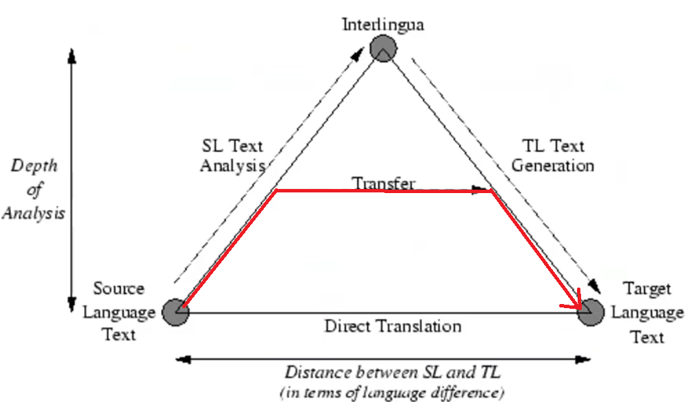
1. Közvetlen (Direct) fordítás
A háromszög legalján: minimális elemzés, lényegében szó→szó csere. Lépései:
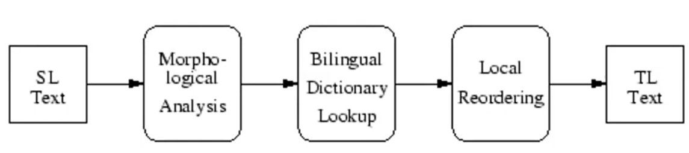
- Morfológiai elemzés — forrásszavak azonosítása
- Kétnyelvű szótári csere — forrásnyelvi szó → célnyelvi szó
- Prepozíció-csere — vonzatbeli eltérések kezelése
- Szórend-átrendezés — célnyelv szórendjéhez igazítás
- Morfológiai generálás — végső célnyelvi szóalak előállítása
Fő korlát: kontextus nélküli szóválasztás, nem skálázható általános szövegre. Klasszikus rendszerek: METEO (kanadai időjárás-fordítás) és SYSTRAN.
2. Interlingua
A háromszög csúcsán: a forrásnyelvet egy interlingva — egy teljesen nyelvfüggetlen, formális közvetítő reprezentáció — szintjére elemezzük fel, majd ebből a reprezentációból generálunk bármely célnyelvre. Az interlingva lényege, hogy nem kötődik egyetlen természetes nyelvhez sem: egyfajta „jelentésnyelv", amely az összes forrás- és célnyelvtől függetlenül tudja leírni a mondanivalót. Előny: n nyelvre csak 2n modul kell (nem n×(n−1)). Miért nem sikerült: valódi nyelvfüggetlen reprezentáció nem definiálható — minden kísérlet (logikai formalizmus, eszperantó) kudarcot vallott. Idővel a csúcs egyre kevésbé volt elérhető: a Vauquois-háromszögből trapéz lett — a teteje „levágódott", mert a teljes interlingva szint a gyakorlatban soha nem valósult meg.
3. Transzfer fordítás
Közvetlen és interlingva között: mély elemzés → transzferszabályok alakítják a célnyelv struktúrájává → generálás. Nyelvpárhoz kötött — más párhoz új modul kell. Példa: Eurotra.
MetaMorpho — hibrid rendszer
▶ Előadás ezen a részen
Kulcsötlet: nincs külön szótár és nyelvtan — minden egységes mintapár-rendszerben van, specifikusságtól az általánosságig:
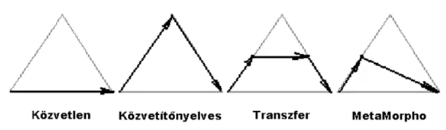
- Specifikus (számítógép ↔ computer) — szótári elem
- Részben specifikus (valahol terül el ↔ is located somewhere) — slottal bővített lexikai egység
- Alulspecifikált (alany–állítmány–tárgy sablon) — nyelvtani szabály
On-the-fly transfer: az elemzés közben épül a célnyelvi struktúra — elemzés végén a fordítás is kész.
Statisztikai gépi fordítás (SMT)
▶ Előadás ezen a részen
Az ötlet az IBM-nél született: a 90-es évek elején átvette a beszédfelismerésből a statisztikai gondolkodást — ha egy hangsorozatot össze lehet párosítani betűsorozatokkal statisztikailag, miért ne lehetne két különböző nyelv mondatait is? Az így megszülető statisztikai MT teljesen elvonatkoztat a nyelvi szabályoktól: csak a korpuszban megfigyelt együttes előfordulásokra épít. Az alapötlet: egy fordítási modell és egy nyelvi modell valószínűségét szorozzuk össze — a legjobb fordítás az, amelyikre ez a szorzat a legnagyobb.
A modell felépítése
A három összetevő:
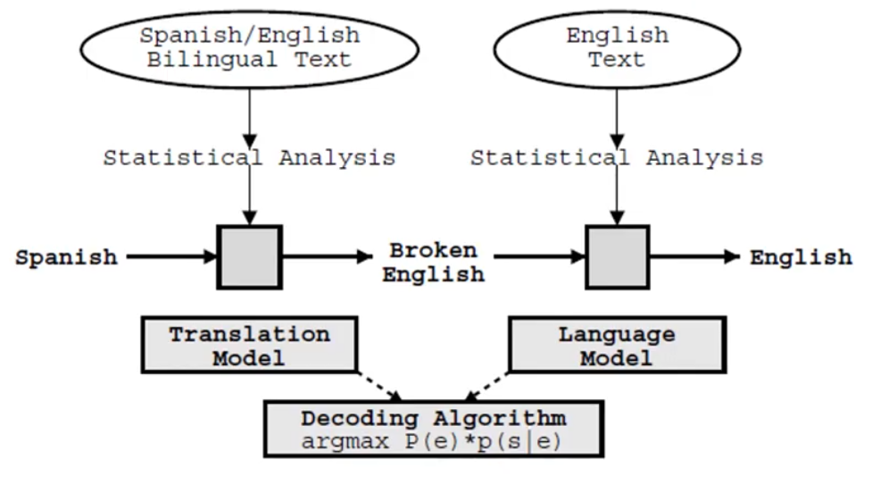
A keresett fordítás: argmaxe P(f|e) · P(e)
- Fordítási modell — P(f|e): párhuzamos korpuszból tanul; adott célnyelvi e mondathoz mekkora valószínűséggel felel meg az f forrásnyelvi mondat.
- Nyelvi modell — P(e): egynyelvű célnyelvi korpuszból tanul; mekkora valószínűséggel folyékony célnyelvi mondat e. (Biztosítja, hogy ne „törött" mondatot kapjunk.)
- Dekóder — megkeresi azt az e-t, amelyre a szorzat maximális.
Neurális gépi fordítás (NMT)
▶ Előadás ezen a részen
A 2010-es évek elejétől a statisztikai modelleket lassan felváltják a neurális modellek. Az NMT lényege: a fordítórendszer végponttól végpontig (end-to-end) tanul párhuzamos korpuszból — nincsenek manuálisan megírt szabályok, nincs különálló fordítási modell és nyelvi modell.
Encoder-decoder architektúra
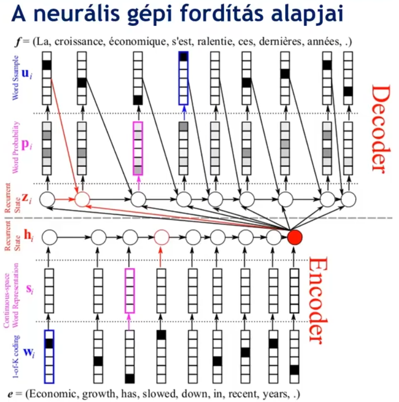
Az alap NMT-modell felépítése:
- Encoder — a forrásnyelvi mondatot szimbolumról szimbólumra feldolgozza, és a mondat tartalmát egyetlen vektorba (a „piros pontba", kontextus-vektorba) sűríti. Ez a vektor a mondat neurális reprezentációja. Önmagában (dekóder nélkül) alkalmas osztályozásra és szemantikai keresésre, mert a mondat egészét egyszerre látja, kétirányú kontextust épít — pl. véleményelemzésnél a „nem rossz" szavanként negatívnak tűnik, de az enkóder a teljes mondatból pozitívnak értékeli.
- Decoder — ebből a vektorból generálja a célnyelvi mondatot szót szó után, az eddig generált szavakra is visszatekintve. Önmagában (enkóder nélkül) jól használható szöveg folytatására és generálásra (pl. GPT): csak a már generált tokeneket látja, nem a „jövőt".
Korai modellek LSTM-et (Long Short-Term Memory) használtak, amelyek képesek hosszabb távú függőségeket kezelni. A mai rendszerek Transformer architektúrán alapulnak (2017, „Attention is All You Need"), amelynek kulcseleme az önfigyelem (self-attention): minden szó minden más szóval interakcióba lép a mondatban, nem csak a szomszédjával. A bemeneti szavakat először one-hot vektorokká alakítjuk (minden szó egy különálló dimenzió), majd a hálózat ezeket sűrű vektoriális reprezentációkká tanulja meg, ahol a hasonló jelentésű szavak közel kerülnek egymáshoz a vektortérben. Így a fordítórendszer az ismeretlen szavakhoz is tud hasonló tanult reprezentációt illeszteni.
Az NMT összefoglalása
- Nincs különálló fordítási modell és nyelvi modell — a kettő integrált, végpont-végpontig tanított rendszer
- A kontextusvektoros encoder visszahozza az interlingva ötletét, de most tanulja a rendszer, nem mi definiáljuk
- A Transformer-alapú rendszerek (Google Translate, DeepL, stb.) ma a legjobb minőséget adják
- Gyengesége: rengeteg párhuzamos adat kell; ritka nyelvpároknál (pl. magyar–litván) gyengébb az SMT-nél is lehet
- Nehéz „belenyúlni": ha a rendszer rosszul fordít valamit (pl. egy tulajdonnevet), nem lehet egyszerűen „megmondani" neki — a tanítóparaméterek mentén lehet csak befolyásolni